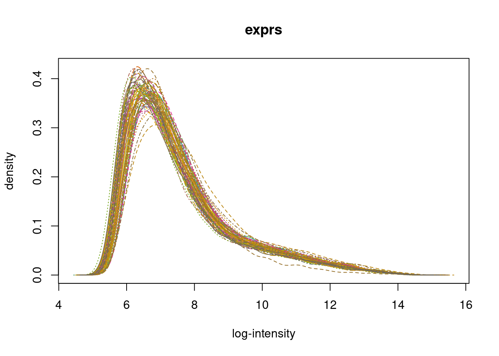
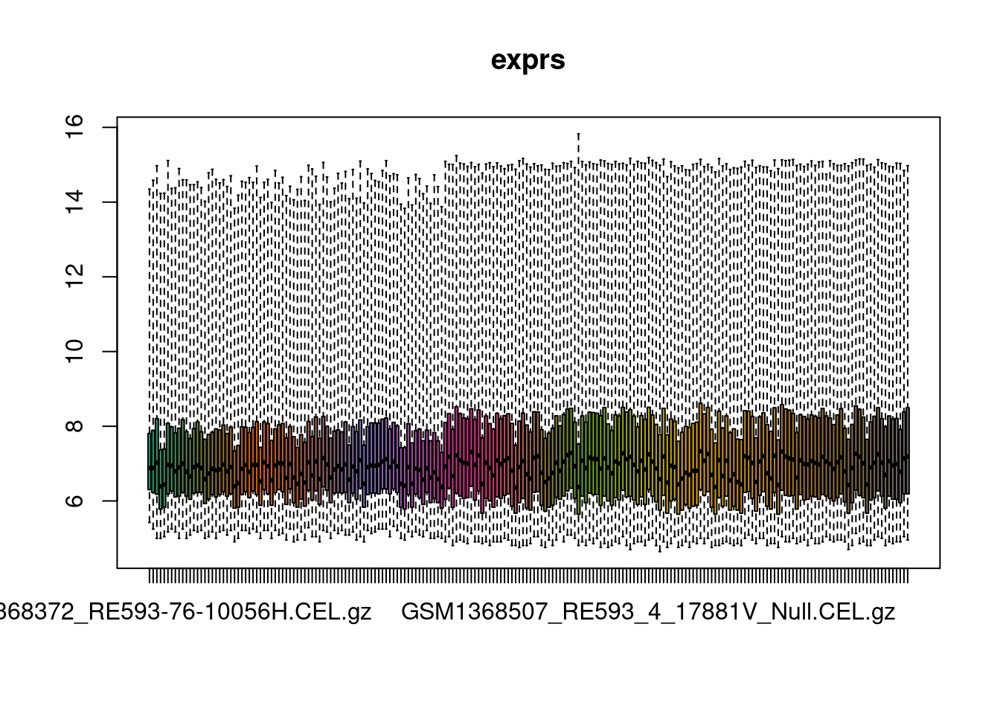
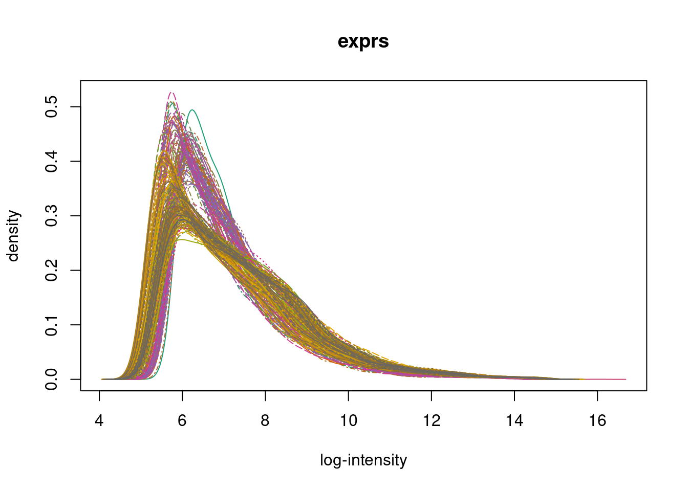
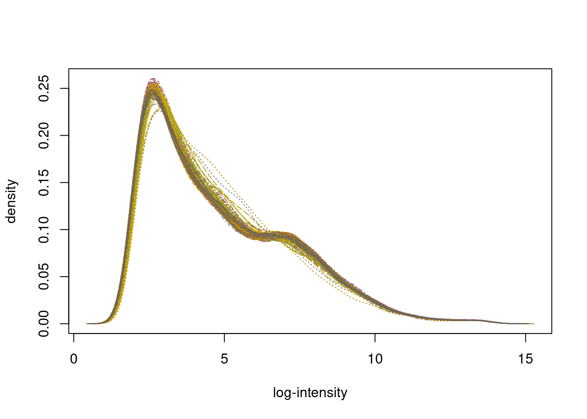
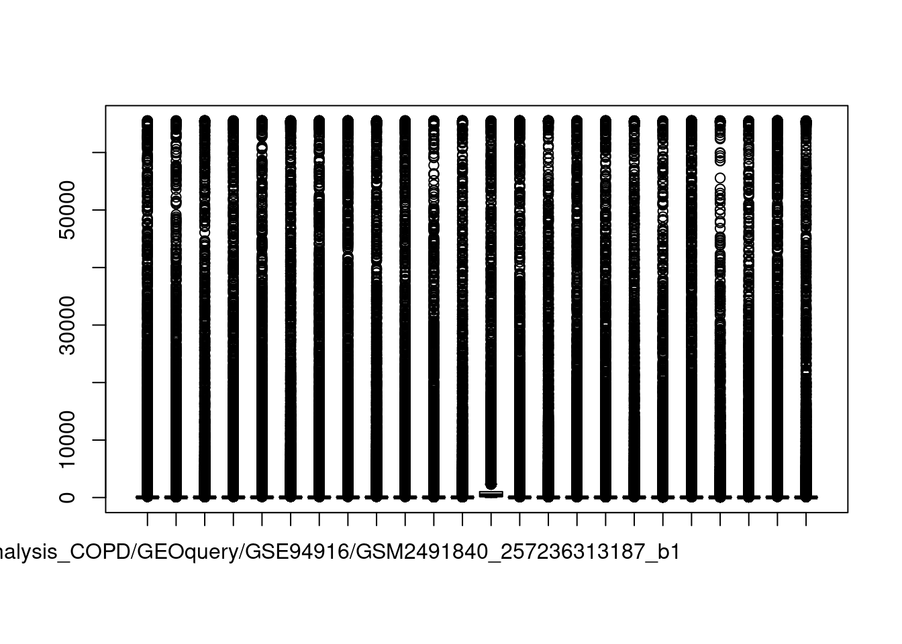
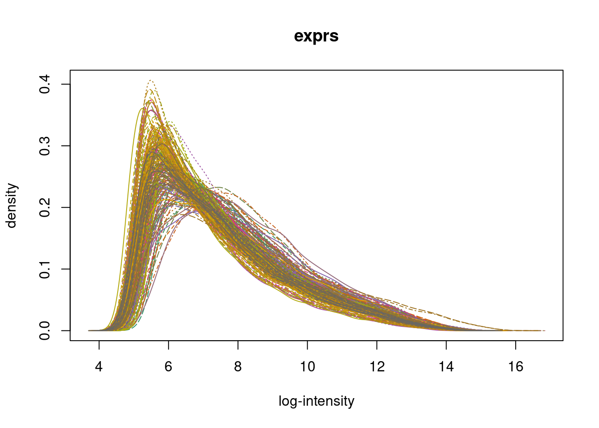

2 Blood: Normalizing data
Ana BVA
24 novembre 2020
Input
This script needs the following files:
Data: Raw data (e.i. .CEL, .TXT)
2-Table_GSE-info.txt: Table with GSE IDs and platform description
Setup
For running the script, type:
ssh -X aaltamirano@dna.lavis.unam.mx
qrsh
cd /home/ana/DataDNA/R-projects/Meta-analysis_COPD/Blood/output_data/.out
module load r/4.0.1
nohup R -e "rmarkdown::render(here::here('Blood/vignettes/2-Blood-normalizing-data.RMD'),output_options = c('self_contained = TRUE'))" > 2-Blood-normalizing-data.out &
The script can be found in: /home/ana/DataDNA/R-projects/Meta-analysis_COPD/Blood/vignettes. And the directories were set using R/setup.R (e.i. DATA, OUPUT, DOWNLOAD) as a small functions that will paste the names into complete paths.
knitr::opts_knit$set(root.dir = here::here())
source(here::here("Blood/R/setup.R"))And this analysis is run in: /home/ana/DataDNA/R-projects/Meta-analysis_COPD
Libraries
library(limma)
library(oligo)
library(tidyverse)Functions
rawCEL_normCEL: Pre-process raw data for Affymetrix
We first read and pre-process raw .CEL files. Each experiment has it own folder with raw data per sample. Then we normalized using RMA algorithm and finally, we save it.
Be sure files are untar and unzip.
In this function you need:
Output:
- Samples normalized
- Boxplots
- Histograms
rawCEL_normCEL <- function(gse){
# select and untar files
gsepath <- file.path(here::here("GEOquery"),gse)
print(gse)
if(length(list.files(gsepath)) == 0){
message("No Supplementary files found")
} else if (length(list.files(gsepath)) < 3 & length(list.files(gsepath)) != 0 ){
ifelse(any(list.files(gsepath,pattern="tar") !=0),
untar(list.files(gsepath,full.names=T,pattern="tar"), exdir=gsepath),
list.files(gsepath))
} else{
print(length(list.files(gsepath)))
}
# for CEL files "AFFYMETRIX"
if(any(grepl("cel",list.files(gsepath),ignore.case = T))){
message("This is an Affymetrix array")
celfiles <- list.celfiles(gsepath,
full.names=TRUE,
listGzipped=TRUE)
# read CEL files in R
rawData <- read.celfiles(celfiles)
#### Figures of raw data
#pdf(str_c("raw_",gse,"_boxplot",TODAY,".pdf"))
## plots of raw data
boxplot(rawData,target="core")
hist(rawData,target="core")
#dev.off()
## RMA normalization
normData <- rma(rawData)
#### Figures of Normalized data
#pdf(str_c("norm_",gse,"_boxplot",TODAY,".pdf"))
## `plots of norm data
boxplot(normData)
hist(normData)
# dev.off()
#write.csv(exprs(normData),str_c("/normalized",gse,"_normData",TODAY,".tx t"),quote=F)
return(normData)
}
#for TXT files "AGILENT"
else if(sum(grepl("txt",list.files(gsepath),ignore.case = T)) >2){
message("This is an Agilent array")
files <- list.files(gsepath,full.names=T, pattern = "txt")
files <- grep("annot",files,value=T,invert=T)
# read agilent files
RG <- read.maimages(files,source = "agilent.median",green.only=T)
#plots: raw data
boxplot(RG$E)
hist(RG$E)
# normalizing data
RG <- limma::backgroundCorrect(RG, method="normexp", offset=1)
RG$E <- normalizeBetweenArrays(RG$E, method="quantile")
RG$E <- log2(RG$E)
#plots: norm
boxplot(RG$E)
hist(RG$E,100)
return(RG)
}
#for TXT files "GPR"
else if(sum(grepl("gpr",list.files(gsepath),ignore.case = T)) >2){
message("This is an Agilent array with GPR files")
files <- list.files(gsepath,full.names=T, pattern = "gpr")
files <- grep("annot",files,value=T,invert=T)
# read agilent files
RG <- read.maimages(files,source = "genepix",green.only=T)
#plots: raw data
boxplot(RG$E)
hist(RG$E)
# normalizing data
RG <- limma::backgroundCorrect(RG, method="normexp", offset=1)
RG$E <- normalizeBetweenArrays(RG$E, method="quantile")
RG$E <- log2(RG$E)
#plots: norm
boxplot(RG$E)
hist(RG$E,100)
return(RG)
}
# anyother case
else{
message("This is not Affymetrix or Agilent")
}
}
#sapply(tissue,rawCEL_normCEL)Analysis
We had selected this experiments and downloaded raw data using srcripts:
0: Data selection
/0-Data-selection.RMD1: Dowload RAW data
/1-download_raw-data.RMD
blood <- scan(DATA("blood_GSE_IDs.txt"),
character(),
sep = ",")STEP 1: Normalizing raw data
Normalize raw data
geo_norm <- sapply(blood,rawCEL_normCEL)## [1] "GSE112811"
## [1] 65## This is an Affymetrix array## Loading required package: pd.hg.u133.plus.2## Loading required package: RSQLite## Loading required package: DBI## Platform design info loaded.## Reading in : /home/ana/DataDNA/R-projects/Meta-analysis_COPD/GEOquery/GSE112811/GSM3084091_COPD_2002_-180_MIN_C3.CEL.gz
## Reading in : /home/ana/DataDNA/R-projects/Meta-analysis_COPD/GEOquery/GSE112811/GSM3084092_COPD_2003_-180_MIN_D3.CEL.gz
## Reading in : /home/ana/DataDNA/R-projects/Meta-analysis_COPD/GEOquery/GSE112811/GSM3084093_COPD_2005_-180_MIN_E3.CEL.gz
## Reading in : /home/ana/DataDNA/R-projects/Meta-analysis_COPD/GEOquery/GSE112811/GSM3084094_COPD_2012_-180_MIN_B2.CEL.gz
## Reading in : /home/ana/DataDNA/R-projects/Meta-analysis_COPD/GEOquery/GSE112811/GSM3084095_COPD_2013_-180_MIN_F4.CEL.gz
## Reading in : /home/ana/DataDNA/R-projects/Meta-analysis_COPD/GEOquery/GSE112811/GSM3084096_COPD_2014_-180_MIN_C2.CEL.gz
## Reading in : /home/ana/DataDNA/R-projects/Meta-analysis_COPD/GEOquery/GSE112811/GSM3084097_COPD_2015_-180_MIN_F7.CEL.gz
## Reading in : /home/ana/DataDNA/R-projects/Meta-analysis_COPD/GEOquery/GSE112811/GSM3084098_COPD_2016_-180_MIN_A6.CEL.gz
## Reading in : /home/ana/DataDNA/R-projects/Meta-analysis_COPD/GEOquery/GSE112811/GSM3084099_COPD_2017_-180_MIN_B6.CEL.gz
## Reading in : /home/ana/DataDNA/R-projects/Meta-analysis_COPD/GEOquery/GSE112811/GSM3084100_COPD_2018_-180_MIN_G7.CEL.gz
## Reading in : /home/ana/DataDNA/R-projects/Meta-analysis_COPD/GEOquery/GSE112811/GSM3084101_COPD_2024_-180_MIN_C6.CEL.gz
## Reading in : /home/ana/DataDNA/R-projects/Meta-analysis_COPD/GEOquery/GSE112811/GSM3084102_COPD_2025_-180_MIN_F8.CEL.gz
## Reading in : /home/ana/DataDNA/R-projects/Meta-analysis_COPD/GEOquery/GSE112811/GSM3084103_COPD_2026_-180_MIN_G4.CEL.gz
## Reading in : /home/ana/DataDNA/R-projects/Meta-analysis_COPD/GEOquery/GSE112811/GSM3084104_COPD_2028_-180_MIN_F3.CEL.gz
## Reading in : /home/ana/DataDNA/R-projects/Meta-analysis_COPD/GEOquery/GSE112811/GSM3084105_COPD_2031_-180_MIN_G8.CEL.gz
## Reading in : /home/ana/DataDNA/R-projects/Meta-analysis_COPD/GEOquery/GSE112811/GSM3084106_COPD_2035_-180_MIN_H4.CEL.gz
## Reading in : /home/ana/DataDNA/R-projects/Meta-analysis_COPD/GEOquery/GSE112811/GSM3084107_COPD_2036_-180_MIN_D6.CEL.gz
## Reading in : /home/ana/DataDNA/R-projects/Meta-analysis_COPD/GEOquery/GSE112811/GSM3084108_COPD_2037_-180_MIN_A5.CEL.gz
## Reading in : /home/ana/DataDNA/R-projects/Meta-analysis_COPD/GEOquery/GSE112811/GSM3084109_COPD_2039_-180_MIN_H8.CEL.gz
## Reading in : /home/ana/DataDNA/R-projects/Meta-analysis_COPD/GEOquery/GSE112811/GSM3084110_COPD_2046_-180_MIN_A9.CEL.gz
## Reading in : /home/ana/DataDNA/R-projects/Meta-analysis_COPD/GEOquery/GSE112811/GSM3084111_HVT_1004_-180_MIN_D2.CEL.gz
## Reading in : /home/ana/DataDNA/R-projects/Meta-analysis_COPD/GEOquery/GSE112811/GSM3084112_HVT_1004_-60_MIN_E6.CEL.gz
## Reading in : /home/ana/DataDNA/R-projects/Meta-analysis_COPD/GEOquery/GSE112811/GSM3084113_HVT_1005_-180_MIN_B5.CEL.gz
## Reading in : /home/ana/DataDNA/R-projects/Meta-analysis_COPD/GEOquery/GSE112811/GSM3084114_HVT_1005_-60_MIN_C5.CEL.gz
## Reading in : /home/ana/DataDNA/R-projects/Meta-analysis_COPD/GEOquery/GSE112811/GSM3084115_HVT_1006_-180_MIN_A1.CEL.gz
## Reading in : /home/ana/DataDNA/R-projects/Meta-analysis_COPD/GEOquery/GSE112811/GSM3084116_HVT_1006_-60_MIN_E2.CEL.gz
## Reading in : /home/ana/DataDNA/R-projects/Meta-analysis_COPD/GEOquery/GSE112811/GSM3084117_HVT_1009_-180_MIN_F6.CEL.gz
## Reading in : /home/ana/DataDNA/R-projects/Meta-analysis_COPD/GEOquery/GSE112811/GSM3084118_HVT_1009_-60_MIN_D5.CEL.gz
## Reading in : /home/ana/DataDNA/R-projects/Meta-analysis_COPD/GEOquery/GSE112811/GSM3084119_HVT_1010_-180_MIN_B1.CEL.gz
## Reading in : /home/ana/DataDNA/R-projects/Meta-analysis_COPD/GEOquery/GSE112811/GSM3084120_HVT_1010_-60_MIN_C1.CEL.gz
## Reading in : /home/ana/DataDNA/R-projects/Meta-analysis_COPD/GEOquery/GSE112811/GSM3084121_HVT_1011_-180_MIN_H7.CEL.gz
## Reading in : /home/ana/DataDNA/R-projects/Meta-analysis_COPD/GEOquery/GSE112811/GSM3084122_HVT_1011_-60_MIN_G6.CEL.gz
## Reading in : /home/ana/DataDNA/R-projects/Meta-analysis_COPD/GEOquery/GSE112811/GSM3084123_HVT_1103_-180_MIN_G3.CEL.gz
## Reading in : /home/ana/DataDNA/R-projects/Meta-analysis_COPD/GEOquery/GSE112811/GSM3084124_HVT_1103_-60_MIN_E5.CEL.gz
## Reading in : /home/ana/DataDNA/R-projects/Meta-analysis_COPD/GEOquery/GSE112811/GSM3084125_HVT_1108_-180_MIN_F2.CEL.gz
## Reading in : /home/ana/DataDNA/R-projects/Meta-analysis_COPD/GEOquery/GSE112811/GSM3084126_HVT_1108_-60_MIN_H6.CEL.gz
## Reading in : /home/ana/DataDNA/R-projects/Meta-analysis_COPD/GEOquery/GSE112811/GSM3084127_HVT_1110_-180_MIN_A8.CEL.gz
## Reading in : /home/ana/DataDNA/R-projects/Meta-analysis_COPD/GEOquery/GSE112811/GSM3084128_HVT_1110_-60_MIN_G2.CEL.gz
## Reading in : /home/ana/DataDNA/R-projects/Meta-analysis_COPD/GEOquery/GSE112811/GSM3084129_HVT_1205_-180_MIN_D1.CEL.gz
## Reading in : /home/ana/DataDNA/R-projects/Meta-analysis_COPD/GEOquery/GSE112811/GSM3084130_HVT_1205_-60_MIN_A7.CEL.gz
## Reading in : /home/ana/DataDNA/R-projects/Meta-analysis_COPD/GEOquery/GSE112811/GSM3084131_HVT_1211_-180_MIN_B7.CEL.gz
## Reading in : /home/ana/DataDNA/R-projects/Meta-analysis_COPD/GEOquery/GSE112811/GSM3084132_HVT_1211_-60_MIN_H3.CEL.gz
## Reading in : /home/ana/DataDNA/R-projects/Meta-analysis_COPD/GEOquery/GSE112811/GSM3084133_HVT_1213_-180_MIN_F5.CEL.gz
## Reading in : /home/ana/DataDNA/R-projects/Meta-analysis_COPD/GEOquery/GSE112811/GSM3084134_HVT_1213_-60_MIN_A4.CEL.gz
## Reading in : /home/ana/DataDNA/R-projects/Meta-analysis_COPD/GEOquery/GSE112811/GSM3084135_HVT_1214_-180_MIN_B4.CEL.gz
## Reading in : /home/ana/DataDNA/R-projects/Meta-analysis_COPD/GEOquery/GSE112811/GSM3084136_HVT_1214_-60_MIN_B8.CEL.gz
## Reading in : /home/ana/DataDNA/R-projects/Meta-analysis_COPD/GEOquery/GSE112811/GSM3084137_HVT_1313_-180_MIN_C7.CEL.gz
## Reading in : /home/ana/DataDNA/R-projects/Meta-analysis_COPD/GEOquery/GSE112811/GSM3084138_HVT_1313_-60_MIN_E1.CEL.gz
## Reading in : /home/ana/DataDNA/R-projects/Meta-analysis_COPD/GEOquery/GSE112811/GSM3084139_HVT_1324_-180_MIN_C8.CEL.gz
## Reading in : /home/ana/DataDNA/R-projects/Meta-analysis_COPD/GEOquery/GSE112811/GSM3084140_HVT_1324_-60_MIN_F1.CEL.gz
## Reading in : /home/ana/DataDNA/R-projects/Meta-analysis_COPD/GEOquery/GSE112811/GSM3084141_HVT_1327_-180_MIN_G1.CEL.gz
## Reading in : /home/ana/DataDNA/R-projects/Meta-analysis_COPD/GEOquery/GSE112811/GSM3084142_HVT_1327_-60_MIN_C4.CEL.gz
## Reading in : /home/ana/DataDNA/R-projects/Meta-analysis_COPD/GEOquery/GSE112811/GSM3084143_HVT_1328_-180_MIN_H1.CEL.gz
## Reading in : /home/ana/DataDNA/R-projects/Meta-analysis_COPD/GEOquery/GSE112811/GSM3084144_HVT_1328_-60_MIN_H2.CEL.gz
## Reading in : /home/ana/DataDNA/R-projects/Meta-analysis_COPD/GEOquery/GSE112811/GSM3084145_HVT_1329_-180_MIN_D4.CEL.gz
## Reading in : /home/ana/DataDNA/R-projects/Meta-analysis_COPD/GEOquery/GSE112811/GSM3084146_HVT_1329_-60_MIN_D8.CEL.gz
## Reading in : /home/ana/DataDNA/R-projects/Meta-analysis_COPD/GEOquery/GSE112811/GSM3084147_HVT_1330_-180_MIN_E4.CEL.gz
## Reading in : /home/ana/DataDNA/R-projects/Meta-analysis_COPD/GEOquery/GSE112811/GSM3084148_HVT_1330_-60_MIN_A2.CEL.gz
## Reading in : /home/ana/DataDNA/R-projects/Meta-analysis_COPD/GEOquery/GSE112811/GSM3084149_HVT_1332_-180_MIN_A3.CEL.gz
## Reading in : /home/ana/DataDNA/R-projects/Meta-analysis_COPD/GEOquery/GSE112811/GSM3084150_HVT_1332_-60_MIN_G5.CEL.gz
## Reading in : /home/ana/DataDNA/R-projects/Meta-analysis_COPD/GEOquery/GSE112811/GSM3084151_HVT_1335_-180_MIN_H5.CEL.gz
## Reading in : /home/ana/DataDNA/R-projects/Meta-analysis_COPD/GEOquery/GSE112811/GSM3084152_HVT_1335_-60_MIN_B3.CEL.gz
## Reading in : /home/ana/DataDNA/R-projects/Meta-analysis_COPD/GEOquery/GSE112811/GSM3084153_HVT_1336_-180_MIN_E8.CEL.gz
## Reading in : /home/ana/DataDNA/R-projects/Meta-analysis_COPD/GEOquery/GSE112811/GSM3084154_HVT_1336_-60_MIN_D7.CEL.gz
## Background correcting
## Normalizing
## Calculating Expression
## [1] "GSE56766"
## [1] 207## This is an Affymetrix array
## Platform design info loaded.## Reading in : /home/ana/DataDNA/R-projects/Meta-analysis_COPD/GEOquery/GSE56766/GSM1368372_RE593-76-10056H.CEL.gz
## Reading in : /home/ana/DataDNA/R-projects/Meta-analysis_COPD/GEOquery/GSE56766/GSM1368373_RE593-67-10062C.CEL.gz
## Reading in : /home/ana/DataDNA/R-projects/Meta-analysis_COPD/GEOquery/GSE56766/GSM1368374_RE593-25-10102O.CEL.gz
## Reading in : /home/ana/DataDNA/R-projects/Meta-analysis_COPD/GEOquery/GSE56766/GSM1368375_RE593-23-10165M.CEL.gz
## Reading in : /home/ana/DataDNA/R-projects/Meta-analysis_COPD/GEOquery/GSE56766/GSM1368376_RE593-8-10403C.CEL.gz
## Reading in : /home/ana/DataDNA/R-projects/Meta-analysis_COPD/GEOquery/GSE56766/GSM1368377_RE593-34-10709A.CEL.gz
## Reading in : /home/ana/DataDNA/R-projects/Meta-analysis_COPD/GEOquery/GSE56766/GSM1368378_RE593-73-11005V.CEL.gz
## Reading in : /home/ana/DataDNA/R-projects/Meta-analysis_COPD/GEOquery/GSE56766/GSM1368379_RE593-79-11126H.CEL.gz
## Reading in : /home/ana/DataDNA/R-projects/Meta-analysis_COPD/GEOquery/GSE56766/GSM1368380_RE593-47-11209L.CEL.gz
## Reading in : /home/ana/DataDNA/R-projects/Meta-analysis_COPD/GEOquery/GSE56766/GSM1368381_RE593-27-11833G.CEL.gz
## Reading in : /home/ana/DataDNA/R-projects/Meta-analysis_COPD/GEOquery/GSE56766/GSM1368382_RE593-82-12139V.CEL.gz
## Reading in : /home/ana/DataDNA/R-projects/Meta-analysis_COPD/GEOquery/GSE56766/GSM1368383_RE593-57-12390D.CEL.gz
## Reading in : /home/ana/DataDNA/R-projects/Meta-analysis_COPD/GEOquery/GSE56766/GSM1368384_RE593-59-12558P.CEL.gz
## Reading in : /home/ana/DataDNA/R-projects/Meta-analysis_COPD/GEOquery/GSE56766/GSM1368385_RE593-31-12593R.CEL.gz
## Reading in : /home/ana/DataDNA/R-projects/Meta-analysis_COPD/GEOquery/GSE56766/GSM1368386_RE593-65-12737P.CEL.gz
## Reading in : /home/ana/DataDNA/R-projects/Meta-analysis_COPD/GEOquery/GSE56766/GSM1368387_RE593-18-13202H.CEL.gz
## Reading in : /home/ana/DataDNA/R-projects/Meta-analysis_COPD/GEOquery/GSE56766/GSM1368388_RE593-78-13730G.CEL.gz
## Reading in : /home/ana/DataDNA/R-projects/Meta-analysis_COPD/GEOquery/GSE56766/GSM1368389_RE593-63-13854Y.CEL.gz
## Reading in : /home/ana/DataDNA/R-projects/Meta-analysis_COPD/GEOquery/GSE56766/GSM1368390_RE593-62-13885J.CEL.gz
## Reading in : /home/ana/DataDNA/R-projects/Meta-analysis_COPD/GEOquery/GSE56766/GSM1368391_RE593-72-14011F.CEL.gz
## Reading in : /home/ana/DataDNA/R-projects/Meta-analysis_COPD/GEOquery/GSE56766/GSM1368392_RE593-68-14303S.CEL.gz
## Reading in : /home/ana/DataDNA/R-projects/Meta-analysis_COPD/GEOquery/GSE56766/GSM1368393_RE593-81-14442G.CEL.gz
## Reading in : /home/ana/DataDNA/R-projects/Meta-analysis_COPD/GEOquery/GSE56766/GSM1368394_RE593-64-14733R.CEL.gz
## Reading in : /home/ana/DataDNA/R-projects/Meta-analysis_COPD/GEOquery/GSE56766/GSM1368395_RE593-15-15454S.CEL.gz
## Reading in : /home/ana/DataDNA/R-projects/Meta-analysis_COPD/GEOquery/GSE56766/GSM1368396_RE593-3-15520F.CEL.gz
## Reading in : /home/ana/DataDNA/R-projects/Meta-analysis_COPD/GEOquery/GSE56766/GSM1368397_RE593-44-15535S.CEL.gz
## Reading in : /home/ana/DataDNA/R-projects/Meta-analysis_COPD/GEOquery/GSE56766/GSM1368398_RE593-50-15946N.CEL.gz
## Reading in : /home/ana/DataDNA/R-projects/Meta-analysis_COPD/GEOquery/GSE56766/GSM1368399_RE593-52-16839R.CEL.gz
## Reading in : /home/ana/DataDNA/R-projects/Meta-analysis_COPD/GEOquery/GSE56766/GSM1368400_RE593-70-17076W.CEL.gz
## Reading in : /home/ana/DataDNA/R-projects/Meta-analysis_COPD/GEOquery/GSE56766/GSM1368401_RE593-36-17223J.CEL.gz
## Reading in : /home/ana/DataDNA/R-projects/Meta-analysis_COPD/GEOquery/GSE56766/GSM1368402_RE593-5-17225N.CEL.gz
## Reading in : /home/ana/DataDNA/R-projects/Meta-analysis_COPD/GEOquery/GSE56766/GSM1368403_RE593-53-17372A.CEL.gz
## Reading in : /home/ana/DataDNA/R-projects/Meta-analysis_COPD/GEOquery/GSE56766/GSM1368404_RE593-40-17431Q.CEL.gz
## Reading in : /home/ana/DataDNA/R-projects/Meta-analysis_COPD/GEOquery/GSE56766/GSM1368405_RE593-13-17800V.CEL.gz
## Reading in : /home/ana/DataDNA/R-projects/Meta-analysis_COPD/GEOquery/GSE56766/GSM1368406_RE593-60-17881V.CEL.gz
## Reading in : /home/ana/DataDNA/R-projects/Meta-analysis_COPD/GEOquery/GSE56766/GSM1368407_RE593-61-18213L.CEL.gz
## Reading in : /home/ana/DataDNA/R-projects/Meta-analysis_COPD/GEOquery/GSE56766/GSM1368408_RE593-46-18425A.CEL.gz
## Reading in : /home/ana/DataDNA/R-projects/Meta-analysis_COPD/GEOquery/GSE56766/GSM1368409_RE593-19-18793D.CEL.gz
## Reading in : /home/ana/DataDNA/R-projects/Meta-analysis_COPD/GEOquery/GSE56766/GSM1368410_RE593-58-18904M.CEL.gz
## Reading in : /home/ana/DataDNA/R-projects/Meta-analysis_COPD/GEOquery/GSE56766/GSM1368411_RE593-20-19003F.CEL.gz
## Reading in : /home/ana/DataDNA/R-projects/Meta-analysis_COPD/GEOquery/GSE56766/GSM1368412_RE593-2-19066D.CEL.gz
## Reading in : /home/ana/DataDNA/R-projects/Meta-analysis_COPD/GEOquery/GSE56766/GSM1368413_RE593-54-19266L.CEL.gz
## Reading in : /home/ana/DataDNA/R-projects/Meta-analysis_COPD/GEOquery/GSE56766/GSM1368414_RE593-21-19373M.CEL.gz
## Reading in : /home/ana/DataDNA/R-projects/Meta-analysis_COPD/GEOquery/GSE56766/GSM1368415_RE593-42-20102U.CEL.gz
## Reading in : /home/ana/DataDNA/R-projects/Meta-analysis_COPD/GEOquery/GSE56766/GSM1368416_RE593-55-20168Y.CEL.gz
## Reading in : /home/ana/DataDNA/R-projects/Meta-analysis_COPD/GEOquery/GSE56766/GSM1368417_RE593-29-20533V.CEL.gz
## Reading in : /home/ana/DataDNA/R-projects/Meta-analysis_COPD/GEOquery/GSE56766/GSM1368418_RE593-10-21074U.CEL.gz
## Reading in : /home/ana/DataDNA/R-projects/Meta-analysis_COPD/GEOquery/GSE56766/GSM1368419_RE593-38-21254W.CEL.gz
## Reading in : /home/ana/DataDNA/R-projects/Meta-analysis_COPD/GEOquery/GSE56766/GSM1368420_RE593-48-21270U.CEL.gz
## Reading in : /home/ana/DataDNA/R-projects/Meta-analysis_COPD/GEOquery/GSE56766/GSM1368421_RE593-4-21467N.CEL.gz
## Reading in : /home/ana/DataDNA/R-projects/Meta-analysis_COPD/GEOquery/GSE56766/GSM1368422_RE593-69-21807L.CEL.gz
## Reading in : /home/ana/DataDNA/R-projects/Meta-analysis_COPD/GEOquery/GSE56766/GSM1368423_RE593-75-22337F.CEL.gz
## Reading in : /home/ana/DataDNA/R-projects/Meta-analysis_COPD/GEOquery/GSE56766/GSM1368424_RE593-77-22369S.CEL.gz
## Reading in : /home/ana/DataDNA/R-projects/Meta-analysis_COPD/GEOquery/GSE56766/GSM1368425_RE593-35-22759F.CEL.gz
## Reading in : /home/ana/DataDNA/R-projects/Meta-analysis_COPD/GEOquery/GSE56766/GSM1368426_RE593-7-22943Y.CEL.gz
## Reading in : /home/ana/DataDNA/R-projects/Meta-analysis_COPD/GEOquery/GSE56766/GSM1368427_RE593-74-22986Q.CEL.gz
## Reading in : /home/ana/DataDNA/R-projects/Meta-analysis_COPD/GEOquery/GSE56766/GSM1368428_RE593-9-23108V.CEL.gz
## Reading in : /home/ana/DataDNA/R-projects/Meta-analysis_COPD/GEOquery/GSE56766/GSM1368429_RE593-39-23273K.CEL.gz
## Reading in : /home/ana/DataDNA/R-projects/Meta-analysis_COPD/GEOquery/GSE56766/GSM1368430_RE593-1-23351E.CEL.gz
## Reading in : /home/ana/DataDNA/R-projects/Meta-analysis_COPD/GEOquery/GSE56766/GSM1368431_RE593-43-23682B.CEL.gz
## Reading in : /home/ana/DataDNA/R-projects/Meta-analysis_COPD/GEOquery/GSE56766/GSM1368432_RE593-45-23743V.CEL.gz
## Reading in : /home/ana/DataDNA/R-projects/Meta-analysis_COPD/GEOquery/GSE56766/GSM1368433_RE593-30-23870C.CEL.gz
## Reading in : /home/ana/DataDNA/R-projects/Meta-analysis_COPD/GEOquery/GSE56766/GSM1368434_RE593-26-24063E.CEL.gz
## Reading in : /home/ana/DataDNA/R-projects/Meta-analysis_COPD/GEOquery/GSE56766/GSM1368435_RE593-33-24429U.CEL.gz
## Reading in : /home/ana/DataDNA/R-projects/Meta-analysis_COPD/GEOquery/GSE56766/GSM1368436_RE593-37-24456X.CEL.gz
## Reading in : /home/ana/DataDNA/R-projects/Meta-analysis_COPD/GEOquery/GSE56766/GSM1368437_RE593-71-24519V.CEL.gz
## Reading in : /home/ana/DataDNA/R-projects/Meta-analysis_COPD/GEOquery/GSE56766/GSM1368438_RE593-49-24662A.CEL.gz
## Reading in : /home/ana/DataDNA/R-projects/Meta-analysis_COPD/GEOquery/GSE56766/GSM1368439_RE593-51-24716X.CEL.gz
## Reading in : /home/ana/DataDNA/R-projects/Meta-analysis_COPD/GEOquery/GSE56766/GSM1368440_RE593-16-24779V.CEL.gz
## Reading in : /home/ana/DataDNA/R-projects/Meta-analysis_COPD/GEOquery/GSE56766/GSM1368441_RE593-22-24864M.CEL.gz
## Reading in : /home/ana/DataDNA/R-projects/Meta-analysis_COPD/GEOquery/GSE56766/GSM1368442_RE593-28-24878X.CEL.gz
## Reading in : /home/ana/DataDNA/R-projects/Meta-analysis_COPD/GEOquery/GSE56766/GSM1368443_RE593-17-24921Y.CEL.gz
## Reading in : /home/ana/DataDNA/R-projects/Meta-analysis_COPD/GEOquery/GSE56766/GSM1368444_RE593-80-24930Z.CEL.gz
## Reading in : /home/ana/DataDNA/R-projects/Meta-analysis_COPD/GEOquery/GSE56766/GSM1368445_RE593-32-25090M.CEL.gz
## Reading in : /home/ana/DataDNA/R-projects/Meta-analysis_COPD/GEOquery/GSE56766/GSM1368446_RE593-24-13102C.CEL.gz
## Reading in : /home/ana/DataDNA/R-projects/Meta-analysis_COPD/GEOquery/GSE56766/GSM1368447_RE593-66-23504L.CEL.gz
## Reading in : /home/ana/DataDNA/R-projects/Meta-analysis_COPD/GEOquery/GSE56766/GSM1368448_RE593-14-25359E.CEL.gz
## Reading in : /home/ana/DataDNA/R-projects/Meta-analysis_COPD/GEOquery/GSE56766/GSM1368449_RE593-83-25541T.CEL.gz
## Reading in : /home/ana/DataDNA/R-projects/Meta-analysis_COPD/GEOquery/GSE56766/GSM1368450_RE593-56-25552Y.CEL.gz
## Reading in : /home/ana/DataDNA/R-projects/Meta-analysis_COPD/GEOquery/GSE56766/GSM1368451_RE593-6-10072F.CEL.gz
## Reading in : /home/ana/DataDNA/R-projects/Meta-analysis_COPD/GEOquery/GSE56766/GSM1368452_RE593_60_10056H_Null.CEL.gz
## Reading in : /home/ana/DataDNA/R-projects/Meta-analysis_COPD/GEOquery/GSE56766/GSM1368453_RE593_68_10056H_3-28.CEL.gz
## Reading in : /home/ana/DataDNA/R-projects/Meta-analysis_COPD/GEOquery/GSE56766/GSM1368454_RE593_17_10062C_3-28.CEL.gz
## Reading in : /home/ana/DataDNA/R-projects/Meta-analysis_COPD/GEOquery/GSE56766/GSM1368455_RE593_1_10062C_Null.CEL.gz
## Reading in : /home/ana/DataDNA/R-projects/Meta-analysis_COPD/GEOquery/GSE56766/GSM1368456_RE593_22_10072F_Null.CEL.gz
## Reading in : /home/ana/DataDNA/R-projects/Meta-analysis_COPD/GEOquery/GSE56766/GSM1368457_RE593_107_10102O_Null.CEL.gz
## Reading in : /home/ana/DataDNA/R-projects/Meta-analysis_COPD/GEOquery/GSE56766/GSM1368458_RE593_115_10102O_3-28.CEL.gz
## Reading in : /home/ana/DataDNA/R-projects/Meta-analysis_COPD/GEOquery/GSE56766/GSM1368459_RE593_105_10403C_3-28.CEL.gz
## Reading in : /home/ana/DataDNA/R-projects/Meta-analysis_COPD/GEOquery/GSE56766/GSM1368460_RE593_112_10633T_Null.CEL.gz
## Reading in : /home/ana/DataDNA/R-projects/Meta-analysis_COPD/GEOquery/GSE56766/GSM1368461_RE593_118_10633T_3-28.CEL.gz
## Reading in : /home/ana/DataDNA/R-projects/Meta-analysis_COPD/GEOquery/GSE56766/GSM1368462_RE593_85_10709A_Null.CEL.gz
## Reading in : /home/ana/DataDNA/R-projects/Meta-analysis_COPD/GEOquery/GSE56766/GSM1368463_RE593_94_10709A_3-28.CEL.gz
## Reading in : /home/ana/DataDNA/R-projects/Meta-analysis_COPD/GEOquery/GSE56766/GSM1368464_RE593_55_11005V_Null.CEL.gz
## Reading in : /home/ana/DataDNA/R-projects/Meta-analysis_COPD/GEOquery/GSE56766/GSM1368465_RE593_67_11005V_3-28.CEL.gz
## Reading in : /home/ana/DataDNA/R-projects/Meta-analysis_COPD/GEOquery/GSE56766/GSM1368466_RE593_99_11209L_Null.CEL.gz
## Reading in : /home/ana/DataDNA/R-projects/Meta-analysis_COPD/GEOquery/GSE56766/GSM1368467_RE593_90_11209L_3-28.CEL.gz
## Reading in : /home/ana/DataDNA/R-projects/Meta-analysis_COPD/GEOquery/GSE56766/GSM1368468_RE593_117_11833G_3-28.CEL.gz
## Reading in : /home/ana/DataDNA/R-projects/Meta-analysis_COPD/GEOquery/GSE56766/GSM1368469_RE593_106_11833G_Null.CEL.gz
## Reading in : /home/ana/DataDNA/R-projects/Meta-analysis_COPD/GEOquery/GSE56766/GSM1368470_RE593_66_12139V_3-28.CEL.gz
## Reading in : /home/ana/DataDNA/R-projects/Meta-analysis_COPD/GEOquery/GSE56766/GSM1368471_RE593_61_12139V_Null.CEL.gz
## Reading in : /home/ana/DataDNA/R-projects/Meta-analysis_COPD/GEOquery/GSE56766/GSM1368472_RE593_34_12390D_3-28.CEL.gz
## Reading in : /home/ana/DataDNA/R-projects/Meta-analysis_COPD/GEOquery/GSE56766/GSM1368473_RE593_24_12390D_Null.CEL.gz
## Reading in : /home/ana/DataDNA/R-projects/Meta-analysis_COPD/GEOquery/GSE56766/GSM1368474_RE593_13_12558P_Null.CEL.gz
## Reading in : /home/ana/DataDNA/R-projects/Meta-analysis_COPD/GEOquery/GSE56766/GSM1368475_RE593_29_12558P_3-28.CEL.gz
## Reading in : /home/ana/DataDNA/R-projects/Meta-analysis_COPD/GEOquery/GSE56766/GSM1368476_RE593_126_12593R_Null.CEL.gz
## Reading in : /home/ana/DataDNA/R-projects/Meta-analysis_COPD/GEOquery/GSE56766/GSM1368477_RE593_131_12593R_3-28.CEL.gz
## Reading in : /home/ana/DataDNA/R-projects/Meta-analysis_COPD/GEOquery/GSE56766/GSM1368478_RE593_52_13012C_3-28.CEL.gz
## Reading in : /home/ana/DataDNA/R-projects/Meta-analysis_COPD/GEOquery/GSE56766/GSM1368479_RE593_56_13012C_Null.CEL.gz
## Reading in : /home/ana/DataDNA/R-projects/Meta-analysis_COPD/GEOquery/GSE56766/GSM1368480_RE593_41_13202H_Null.CEL.gz
## Reading in : /home/ana/DataDNA/R-projects/Meta-analysis_COPD/GEOquery/GSE56766/GSM1368481_RE593_49_13202H_3-28.CEL.gz
## Reading in : /home/ana/DataDNA/R-projects/Meta-analysis_COPD/GEOquery/GSE56766/GSM1368482_RE593_81_13730G_3-28.CEL.gz
## Reading in : /home/ana/DataDNA/R-projects/Meta-analysis_COPD/GEOquery/GSE56766/GSM1368483_RE593_77_13730G_Null.CEL.gz
## Reading in : /home/ana/DataDNA/R-projects/Meta-analysis_COPD/GEOquery/GSE56766/GSM1368484_RE593_121_13854Y_3-28.CEL.gz
## Reading in : /home/ana/DataDNA/R-projects/Meta-analysis_COPD/GEOquery/GSE56766/GSM1368485_RE593_119_13854Y_Null.CEL.gz
## Reading in : /home/ana/DataDNA/R-projects/Meta-analysis_COPD/GEOquery/GSE56766/GSM1368486_RE593_124_13885J_Null.CEL.gz
## Reading in : /home/ana/DataDNA/R-projects/Meta-analysis_COPD/GEOquery/GSE56766/GSM1368487_RE593_128_13885J_3-28.CEL.gz
## Reading in : /home/ana/DataDNA/R-projects/Meta-analysis_COPD/GEOquery/GSE56766/GSM1368488_RE593_64_14011F_3-28.CEL.gz
## Reading in : /home/ana/DataDNA/R-projects/Meta-analysis_COPD/GEOquery/GSE56766/GSM1368489_RE593_59_14011F_Null.CEL.gz
## Reading in : /home/ana/DataDNA/R-projects/Meta-analysis_COPD/GEOquery/GSE56766/GSM1368490_RE593_83_14442G_Null.CEL.gz
## Reading in : /home/ana/DataDNA/R-projects/Meta-analysis_COPD/GEOquery/GSE56766/GSM1368491_RE593_92_14442G_3-28.CEL.gz
## Reading in : /home/ana/DataDNA/R-projects/Meta-analysis_COPD/GEOquery/GSE56766/GSM1368492_RE593_122_14733R_3-28.CEL.gz
## Reading in : /home/ana/DataDNA/R-projects/Meta-analysis_COPD/GEOquery/GSE56766/GSM1368493_RE593_120_14733R_Null.CEL.gz
## Reading in : /home/ana/DataDNA/R-projects/Meta-analysis_COPD/GEOquery/GSE56766/GSM1368494_RE593_2_15454S_Null.CEL.gz
## Reading in : /home/ana/DataDNA/R-projects/Meta-analysis_COPD/GEOquery/GSE56766/GSM1368495_RE593_6_15454S_3-28.CEL.gz
## Reading in : /home/ana/DataDNA/R-projects/Meta-analysis_COPD/GEOquery/GSE56766/GSM1368496_RE593_38_15520F_Null.CEL.gz
## Reading in : /home/ana/DataDNA/R-projects/Meta-analysis_COPD/GEOquery/GSE56766/GSM1368497_RE593_51_15520F_3-28.CEL.gz
## Reading in : /home/ana/DataDNA/R-projects/Meta-analysis_COPD/GEOquery/GSE56766/GSM1368498_RE593_101_16839R_3-28.CEL.gz
## Reading in : /home/ana/DataDNA/R-projects/Meta-analysis_COPD/GEOquery/GSE56766/GSM1368499_RE593_98_16839R_Null.CEL.gz
## Reading in : /home/ana/DataDNA/R-projects/Meta-analysis_COPD/GEOquery/GSE56766/GSM1368500_RE593_104_17076W_3-28.CEL.gz
## Reading in : /home/ana/DataDNA/R-projects/Meta-analysis_COPD/GEOquery/GSE56766/GSM1368501_RE593_97_17076W_Null.CEL.gz
## Reading in : /home/ana/DataDNA/R-projects/Meta-analysis_COPD/GEOquery/GSE56766/GSM1368502_RE593_65_17223J_3-28.CEL.gz
## Reading in : /home/ana/DataDNA/R-projects/Meta-analysis_COPD/GEOquery/GSE56766/GSM1368503_RE593_78_17225N_3-28.CEL.gz
## Reading in : /home/ana/DataDNA/R-projects/Meta-analysis_COPD/GEOquery/GSE56766/GSM1368504_RE593_57_17225N_Null.CEL.gz
## Reading in : /home/ana/DataDNA/R-projects/Meta-analysis_COPD/GEOquery/GSE56766/GSM1368505_RE593_31_17431Q_3-28.CEL.gz
## Reading in : /home/ana/DataDNA/R-projects/Meta-analysis_COPD/GEOquery/GSE56766/GSM1368506_RE593_25_17431Q_Null.CEL.gz
## Reading in : /home/ana/DataDNA/R-projects/Meta-analysis_COPD/GEOquery/GSE56766/GSM1368507_RE593_4_17881V_Null.CEL.gz
## Reading in : /home/ana/DataDNA/R-projects/Meta-analysis_COPD/GEOquery/GSE56766/GSM1368508_RE593_16_17881V_3-28.CEL.gz
## Reading in : /home/ana/DataDNA/R-projects/Meta-analysis_COPD/GEOquery/GSE56766/GSM1368509_RE593_39_17937W_Null.CEL.gz
## Reading in : /home/ana/DataDNA/R-projects/Meta-analysis_COPD/GEOquery/GSE56766/GSM1368510_RE593_46_17937W_3-28.CEL.gz
## Reading in : /home/ana/DataDNA/R-projects/Meta-analysis_COPD/GEOquery/GSE56766/GSM1368511_RE593_3_18793D_Null.CEL.gz
## Reading in : /home/ana/DataDNA/R-projects/Meta-analysis_COPD/GEOquery/GSE56766/GSM1368512_RE593_15_18793D_3-28.CEL.gz
## Reading in : /home/ana/DataDNA/R-projects/Meta-analysis_COPD/GEOquery/GSE56766/GSM1368513_RE593_18_18904M_3-28.CEL.gz
## Reading in : /home/ana/DataDNA/R-projects/Meta-analysis_COPD/GEOquery/GSE56766/GSM1368514_RE593_10_18904M_Null.CEL.gz
## Reading in : /home/ana/DataDNA/R-projects/Meta-analysis_COPD/GEOquery/GSE56766/GSM1368515_RE593_53_20102U_3-28.CEL.gz
## Reading in : /home/ana/DataDNA/R-projects/Meta-analysis_COPD/GEOquery/GSE56766/GSM1368516_RE593_40_20102U_Null.CEL.gz
## Reading in : /home/ana/DataDNA/R-projects/Meta-analysis_COPD/GEOquery/GSE56766/GSM1368517_RE593_93_20533V_3-28.CEL.gz
## Reading in : /home/ana/DataDNA/R-projects/Meta-analysis_COPD/GEOquery/GSE56766/GSM1368518_RE593_86_20533V_Null.CEL.gz
## Reading in : /home/ana/DataDNA/R-projects/Meta-analysis_COPD/GEOquery/GSE56766/GSM1368519_RE593_11_21074U_Null.CEL.gz
## Reading in : /home/ana/DataDNA/R-projects/Meta-analysis_COPD/GEOquery/GSE56766/GSM1368520_RE593_7_21074U_3-28.CEL.gz
## Reading in : /home/ana/DataDNA/R-projects/Meta-analysis_COPD/GEOquery/GSE56766/GSM1368521_RE593_75_21254W_Null.CEL.gz
## Reading in : /home/ana/DataDNA/R-projects/Meta-analysis_COPD/GEOquery/GSE56766/GSM1368522_RE593_114_21270U_3-28.CEL.gz
## Reading in : /home/ana/DataDNA/R-projects/Meta-analysis_COPD/GEOquery/GSE56766/GSM1368523_RE593_108_21270U_Null.CEL.gz
## Reading in : /home/ana/DataDNA/R-projects/Meta-analysis_COPD/GEOquery/GSE56766/GSM1368524_RE593_44_21467N_Null.CEL.gz
## Reading in : /home/ana/DataDNA/R-projects/Meta-analysis_COPD/GEOquery/GSE56766/GSM1368525_RE593_54_21467N_3-28.CEL.gz
## Reading in : /home/ana/DataDNA/R-projects/Meta-analysis_COPD/GEOquery/GSE56766/GSM1368526_RE593_5_21807L_3-28.CEL.gz
## Reading in : /home/ana/DataDNA/R-projects/Meta-analysis_COPD/GEOquery/GSE56766/GSM1368527_RE593_23_21807L_Null.CEL.gz
## Reading in : /home/ana/DataDNA/R-projects/Meta-analysis_COPD/GEOquery/GSE56766/GSM1368528_RE593_88_22337F_Null.CEL.gz
## Reading in : /home/ana/DataDNA/R-projects/Meta-analysis_COPD/GEOquery/GSE56766/GSM1368529_RE593_79_22337F_3-28.CEL.gz
## Reading in : /home/ana/DataDNA/R-projects/Meta-analysis_COPD/GEOquery/GSE56766/GSM1368530_RE593_76_22369S_Null.CEL.gz
## Reading in : /home/ana/DataDNA/R-projects/Meta-analysis_COPD/GEOquery/GSE56766/GSM1368531_RE593_47_22759F_3-28.CEL.gz
## Reading in : /home/ana/DataDNA/R-projects/Meta-analysis_COPD/GEOquery/GSE56766/GSM1368532_RE593_43_22759F_Null.CEL.gz
## Reading in : /home/ana/DataDNA/R-projects/Meta-analysis_COPD/GEOquery/GSE56766/GSM1368533_RE593_96_22943Y_3-28.CEL.gz
## Reading in : /home/ana/DataDNA/R-projects/Meta-analysis_COPD/GEOquery/GSE56766/GSM1368534_RE593_74_22943Y_Null.CEL.gz
## Reading in : /home/ana/DataDNA/R-projects/Meta-analysis_COPD/GEOquery/GSE56766/GSM1368535_RE593_69_22986Q_3-28.CEL.gz
## Reading in : /home/ana/DataDNA/R-projects/Meta-analysis_COPD/GEOquery/GSE56766/GSM1368536_RE593_58_22986Q_Null.CEL.gz
## Reading in : /home/ana/DataDNA/R-projects/Meta-analysis_COPD/GEOquery/GSE56766/GSM1368537_RE593_127_23108V_Null.CEL.gz
## Reading in : /home/ana/DataDNA/R-projects/Meta-analysis_COPD/GEOquery/GSE56766/GSM1368538_RE593_130_23108V_3-28.CEL.gz
## Reading in : /home/ana/DataDNA/R-projects/Meta-analysis_COPD/GEOquery/GSE56766/GSM1368539_RE593_91_23273K_3-28.CEL.gz
## Reading in : /home/ana/DataDNA/R-projects/Meta-analysis_COPD/GEOquery/GSE56766/GSM1368540_RE593_87_23273K_Null.CEL.gz
## Reading in : /home/ana/DataDNA/R-projects/Meta-analysis_COPD/GEOquery/GSE56766/GSM1368541_RE593_27_23351E_3-28.CEL.gz
## Reading in : /home/ana/DataDNA/R-projects/Meta-analysis_COPD/GEOquery/GSE56766/GSM1368542_RE593_42_23351E_Null.CEL.gz
## Reading in : /home/ana/DataDNA/R-projects/Meta-analysis_COPD/GEOquery/GSE56766/GSM1368543_RE593_14_23504D_Null.CEL.gz
## Reading in : /home/ana/DataDNA/R-projects/Meta-analysis_COPD/GEOquery/GSE56766/GSM1368544_RE593_8_23504D_3-28.CEL.gz
## Reading in : /home/ana/DataDNA/R-projects/Meta-analysis_COPD/GEOquery/GSE56766/GSM1368545_RE593_26_23682B_Null.CEL.gz
## Reading in : /home/ana/DataDNA/R-projects/Meta-analysis_COPD/GEOquery/GSE56766/GSM1368546_RE593_28_23682B_3-28.CEL.gz
## Reading in : /home/ana/DataDNA/R-projects/Meta-analysis_COPD/GEOquery/GSE56766/GSM1368547_RE593_35_23743V_Null.CEL.gz
## Reading in : /home/ana/DataDNA/R-projects/Meta-analysis_COPD/GEOquery/GSE56766/GSM1368548_RE593_129_23870C_3-28.CEL.gz
## Reading in : /home/ana/DataDNA/R-projects/Meta-analysis_COPD/GEOquery/GSE56766/GSM1368549_RE593_84_24063E_Null.CEL.gz
## Reading in : /home/ana/DataDNA/R-projects/Meta-analysis_COPD/GEOquery/GSE56766/GSM1368550_RE593_95_24063E_3-28.CEL.gz
## Reading in : /home/ana/DataDNA/R-projects/Meta-analysis_COPD/GEOquery/GSE56766/GSM1368551_RE593_72_24429U_Null.CEL.gz
## Reading in : /home/ana/DataDNA/R-projects/Meta-analysis_COPD/GEOquery/GSE56766/GSM1368552_RE593_80_24429U_3-28.CEL.gz
## Reading in : /home/ana/DataDNA/R-projects/Meta-analysis_COPD/GEOquery/GSE56766/GSM1368553_RE593_45_24456X_3-28.CEL.gz
## Reading in : /home/ana/DataDNA/R-projects/Meta-analysis_COPD/GEOquery/GSE56766/GSM1368554_RE593_19_24456X_Null.CEL.gz
## Reading in : /home/ana/DataDNA/R-projects/Meta-analysis_COPD/GEOquery/GSE56766/GSM1368555_RE593_110_24662A_Null.CEL.gz
## Reading in : /home/ana/DataDNA/R-projects/Meta-analysis_COPD/GEOquery/GSE56766/GSM1368556_RE593_89_24667K_Null.CEL.gz
## Reading in : /home/ana/DataDNA/R-projects/Meta-analysis_COPD/GEOquery/GSE56766/GSM1368557_RE593_71_24667K_3-28.CEL.gz
## Reading in : /home/ana/DataDNA/R-projects/Meta-analysis_COPD/GEOquery/GSE56766/GSM1368558_RE593_100_24716X_Null.CEL.gz
## Reading in : /home/ana/DataDNA/R-projects/Meta-analysis_COPD/GEOquery/GSE56766/GSM1368559_RE593_102_24716X_3-28.CEL.gz
## Reading in : /home/ana/DataDNA/R-projects/Meta-analysis_COPD/GEOquery/GSE56766/GSM1368560_RE593_48_24779V_3-28.CEL.gz
## Reading in : /home/ana/DataDNA/R-projects/Meta-analysis_COPD/GEOquery/GSE56766/GSM1368561_RE593_36_24779V_Null.CEL.gz
## Reading in : /home/ana/DataDNA/R-projects/Meta-analysis_COPD/GEOquery/GSE56766/GSM1368562_RE593_50_24864M_3-28.CEL.gz
## Reading in : /home/ana/DataDNA/R-projects/Meta-analysis_COPD/GEOquery/GSE56766/GSM1368563_RE593_21_24864M_Null.CEL.gz
## Reading in : /home/ana/DataDNA/R-projects/Meta-analysis_COPD/GEOquery/GSE56766/GSM1368564_RE593_9_24878X_3-28.CEL.gz
## Reading in : /home/ana/DataDNA/R-projects/Meta-analysis_COPD/GEOquery/GSE56766/GSM1368565_RE593_12_24878X_Null.CEL.gz
## Reading in : /home/ana/DataDNA/R-projects/Meta-analysis_COPD/GEOquery/GSE56766/GSM1368566_RE593_37_24921Y_Null.CEL.gz
## Reading in : /home/ana/DataDNA/R-projects/Meta-analysis_COPD/GEOquery/GSE56766/GSM1368567_RE593_32_24921Y_3-28.CEL.gz
## Reading in : /home/ana/DataDNA/R-projects/Meta-analysis_COPD/GEOquery/GSE56766/GSM1368568_RE593_82_24930Z_3-28.CEL.gz
## Reading in : /home/ana/DataDNA/R-projects/Meta-analysis_COPD/GEOquery/GSE56766/GSM1368569_RE593_73_24930Z_Null.CEL.gz
## Reading in : /home/ana/DataDNA/R-projects/Meta-analysis_COPD/GEOquery/GSE56766/GSM1368570_RE593_30_25090M_3-28.CEL.gz
## Reading in : /home/ana/DataDNA/R-projects/Meta-analysis_COPD/GEOquery/GSE56766/GSM1368571_RE593_20_25090M_Null.CEL.gz
## Reading in : /home/ana/DataDNA/R-projects/Meta-analysis_COPD/GEOquery/GSE56766/GSM1368572_RE593_113_25359E_3-28.CEL.gz
## Reading in : /home/ana/DataDNA/R-projects/Meta-analysis_COPD/GEOquery/GSE56766/GSM1368573_RE593_111_25359E_Null_2.CEL.gz
## Reading in : /home/ana/DataDNA/R-projects/Meta-analysis_COPD/GEOquery/GSE56766/GSM1368574_RE593_70_25541T_3-28_2.CEL.gz
## Reading in : /home/ana/DataDNA/R-projects/Meta-analysis_COPD/GEOquery/GSE56766/GSM1368575_RE593_62_25541T_Null.CEL.gz
## Reading in : /home/ana/DataDNA/R-projects/Meta-analysis_COPD/GEOquery/GSE56766/GSM1368576_RE593_116_25552Y_3-28.CEL.gz
## Reading in : /home/ana/DataDNA/R-projects/Meta-analysis_COPD/GEOquery/GSE56766/GSM1368577_RE593_109_25552Y_Null.CEL.gz
## Background correcting
## Normalizing
## Calculating Expression## [1] "GSE42057"
## [1] 137## This is an Affymetrix array
## Platform design info loaded.## Reading in : /home/ana/DataDNA/R-projects/Meta-analysis_COPD/GEOquery/GSE42057/GSM1031549_10062C.CEL.gz
## Reading in : /home/ana/DataDNA/R-projects/Meta-analysis_COPD/GEOquery/GSE42057/GSM1031550_10071D.CEL.gz
## Reading in : /home/ana/DataDNA/R-projects/Meta-analysis_COPD/GEOquery/GSE42057/GSM1031551_10087S.CEL.gz
## Reading in : /home/ana/DataDNA/R-projects/Meta-analysis_COPD/GEOquery/GSE42057/GSM1031552_10097V.CEL.gz
## Reading in : /home/ana/DataDNA/R-projects/Meta-analysis_COPD/GEOquery/GSE42057/GSM1031553_10102O.CEL.gz
## Reading in : /home/ana/DataDNA/R-projects/Meta-analysis_COPD/GEOquery/GSE42057/GSM1031554_10104S.CEL.gz
## Reading in : /home/ana/DataDNA/R-projects/Meta-analysis_COPD/GEOquery/GSE42057/GSM1031555_10136F.CEL.gz
## Reading in : /home/ana/DataDNA/R-projects/Meta-analysis_COPD/GEOquery/GSE42057/GSM1031556_10138J.CEL.gz
## Reading in : /home/ana/DataDNA/R-projects/Meta-analysis_COPD/GEOquery/GSE42057/GSM1031557_10166O.CEL.gz
## Reading in : /home/ana/DataDNA/R-projects/Meta-analysis_COPD/GEOquery/GSE42057/GSM1031558_10170F.CEL.gz
## Reading in : /home/ana/DataDNA/R-projects/Meta-analysis_COPD/GEOquery/GSE42057/GSM1031559_10182M.CEL.gz
## Reading in : /home/ana/DataDNA/R-projects/Meta-analysis_COPD/GEOquery/GSE42057/GSM1031560_10245K.CEL.gz
## Reading in : /home/ana/DataDNA/R-projects/Meta-analysis_COPD/GEOquery/GSE42057/GSM1031561_10300S.CEL.gz
## Reading in : /home/ana/DataDNA/R-projects/Meta-analysis_COPD/GEOquery/GSE42057/GSM1031562_10328O.CEL.gz
## Reading in : /home/ana/DataDNA/R-projects/Meta-analysis_COPD/GEOquery/GSE42057/GSM1031563_10390T.CEL.gz
## Reading in : /home/ana/DataDNA/R-projects/Meta-analysis_COPD/GEOquery/GSE42057/GSM1031564_10391V.CEL.gz
## Reading in : /home/ana/DataDNA/R-projects/Meta-analysis_COPD/GEOquery/GSE42057/GSM1031565_10455V.CEL.gz
## Reading in : /home/ana/DataDNA/R-projects/Meta-analysis_COPD/GEOquery/GSE42057/GSM1031566_10458B.CEL.gz
## Reading in : /home/ana/DataDNA/R-projects/Meta-analysis_COPD/GEOquery/GSE42057/GSM1031567_10465Y.CEL.gz
## Reading in : /home/ana/DataDNA/R-projects/Meta-analysis_COPD/GEOquery/GSE42057/GSM1031568_10473X.CEL.gz
## Reading in : /home/ana/DataDNA/R-projects/Meta-analysis_COPD/GEOquery/GSE42057/GSM1031569_10544U.CEL.gz
## Reading in : /home/ana/DataDNA/R-projects/Meta-analysis_COPD/GEOquery/GSE42057/GSM1031570_10630N.CEL.gz
## Reading in : /home/ana/DataDNA/R-projects/Meta-analysis_COPD/GEOquery/GSE42057/GSM1031571_10636Z.CEL.gz
## Reading in : /home/ana/DataDNA/R-projects/Meta-analysis_COPD/GEOquery/GSE42057/GSM1031572_10687Q.CEL.gz
## Reading in : /home/ana/DataDNA/R-projects/Meta-analysis_COPD/GEOquery/GSE42057/GSM1031573_11070G.CEL.gz
## Reading in : /home/ana/DataDNA/R-projects/Meta-analysis_COPD/GEOquery/GSE42057/GSM1031574_11209L.CEL.gz
## Reading in : /home/ana/DataDNA/R-projects/Meta-analysis_COPD/GEOquery/GSE42057/GSM1031575_11218M.CEL.gz
## Reading in : /home/ana/DataDNA/R-projects/Meta-analysis_COPD/GEOquery/GSE42057/GSM1031576_11455A.CEL.gz
## Reading in : /home/ana/DataDNA/R-projects/Meta-analysis_COPD/GEOquery/GSE42057/GSM1031577_11774Q.CEL.gz
## Reading in : /home/ana/DataDNA/R-projects/Meta-analysis_COPD/GEOquery/GSE42057/GSM1031578_11805B.CEL.gz
## Reading in : /home/ana/DataDNA/R-projects/Meta-analysis_COPD/GEOquery/GSE42057/GSM1031579_12593R.CEL.gz
## Reading in : /home/ana/DataDNA/R-projects/Meta-analysis_COPD/GEOquery/GSE42057/GSM1031580_12771P.CEL.gz
## Reading in : /home/ana/DataDNA/R-projects/Meta-analysis_COPD/GEOquery/GSE42057/GSM1031581_12778D.CEL.gz
## Reading in : /home/ana/DataDNA/R-projects/Meta-analysis_COPD/GEOquery/GSE42057/GSM1031582_12816L.CEL.gz
## Reading in : /home/ana/DataDNA/R-projects/Meta-analysis_COPD/GEOquery/GSE42057/GSM1031583_12900A.CEL.gz
## Reading in : /home/ana/DataDNA/R-projects/Meta-analysis_COPD/GEOquery/GSE42057/GSM1031584_12969K.CEL.gz
## Reading in : /home/ana/DataDNA/R-projects/Meta-analysis_COPD/GEOquery/GSE42057/GSM1031585_13012C.CEL.gz
## Reading in : /home/ana/DataDNA/R-projects/Meta-analysis_COPD/GEOquery/GSE42057/GSM1031586_13672S.CEL.gz
## Reading in : /home/ana/DataDNA/R-projects/Meta-analysis_COPD/GEOquery/GSE42057/GSM1031587_13686D.CEL.gz
## Reading in : /home/ana/DataDNA/R-projects/Meta-analysis_COPD/GEOquery/GSE42057/GSM1031588_13885J.CEL.gz
## Reading in : /home/ana/DataDNA/R-projects/Meta-analysis_COPD/GEOquery/GSE42057/GSM1031589_13959M.CEL.gz
## Reading in : /home/ana/DataDNA/R-projects/Meta-analysis_COPD/GEOquery/GSE42057/GSM1031590_14303S.CEL.gz
## Reading in : /home/ana/DataDNA/R-projects/Meta-analysis_COPD/GEOquery/GSE42057/GSM1031591_18468S.CEL.gz
## Reading in : /home/ana/DataDNA/R-projects/Meta-analysis_COPD/GEOquery/GSE42057/GSM1031592_19370G.CEL.gz
## Reading in : /home/ana/DataDNA/R-projects/Meta-analysis_COPD/GEOquery/GSE42057/GSM1031593_19688L.CEL.gz
## Reading in : /home/ana/DataDNA/R-projects/Meta-analysis_COPD/GEOquery/GSE42057/GSM1031594_20132D.CEL.gz
## Reading in : /home/ana/DataDNA/R-projects/Meta-analysis_COPD/GEOquery/GSE42057/GSM1031595_20271R.CEL.gz
## Reading in : /home/ana/DataDNA/R-projects/Meta-analysis_COPD/GEOquery/GSE42057/GSM1031596_20370T.CEL.gz
## Reading in : /home/ana/DataDNA/R-projects/Meta-analysis_COPD/GEOquery/GSE42057/GSM1031597_20400C.CEL.gz
## Reading in : /home/ana/DataDNA/R-projects/Meta-analysis_COPD/GEOquery/GSE42057/GSM1031598_20542W.CEL.gz
## Reading in : /home/ana/DataDNA/R-projects/Meta-analysis_COPD/GEOquery/GSE42057/GSM1031599_20580E.CEL.gz
## Reading in : /home/ana/DataDNA/R-projects/Meta-analysis_COPD/GEOquery/GSE42057/GSM1031600_20696X.CEL.gz
## Reading in : /home/ana/DataDNA/R-projects/Meta-analysis_COPD/GEOquery/GSE42057/GSM1031601_20738N.CEL.gz
## Reading in : /home/ana/DataDNA/R-projects/Meta-analysis_COPD/GEOquery/GSE42057/GSM1031602_20777X.CEL.gz
## Reading in : /home/ana/DataDNA/R-projects/Meta-analysis_COPD/GEOquery/GSE42057/GSM1031603_20778Z.CEL.gz
## Reading in : /home/ana/DataDNA/R-projects/Meta-analysis_COPD/GEOquery/GSE42057/GSM1031604_20815F.CEL.gz
## Reading in : /home/ana/DataDNA/R-projects/Meta-analysis_COPD/GEOquery/GSE42057/GSM1031605_20900W.CEL.gz
## Reading in : /home/ana/DataDNA/R-projects/Meta-analysis_COPD/GEOquery/GSE42057/GSM1031606_21305N.CEL.gz
## Reading in : /home/ana/DataDNA/R-projects/Meta-analysis_COPD/GEOquery/GSE42057/GSM1031607_21482J.CEL.gz
## Reading in : /home/ana/DataDNA/R-projects/Meta-analysis_COPD/GEOquery/GSE42057/GSM1031608_21489X.CEL.gz
## Reading in : /home/ana/DataDNA/R-projects/Meta-analysis_COPD/GEOquery/GSE42057/GSM1031609_21520R.CEL.gz
## Reading in : /home/ana/DataDNA/R-projects/Meta-analysis_COPD/GEOquery/GSE42057/GSM1031610_21556M.CEL.gz
## Reading in : /home/ana/DataDNA/R-projects/Meta-analysis_COPD/GEOquery/GSE42057/GSM1031611_21609H.CEL.gz
## Reading in : /home/ana/DataDNA/R-projects/Meta-analysis_COPD/GEOquery/GSE42057/GSM1031612_21710W.CEL.gz
## Reading in : /home/ana/DataDNA/R-projects/Meta-analysis_COPD/GEOquery/GSE42057/GSM1031613_21711Y.CEL.gz
## Reading in : /home/ana/DataDNA/R-projects/Meta-analysis_COPD/GEOquery/GSE42057/GSM1031614_21731E_2.CEL.gz
## Reading in : /home/ana/DataDNA/R-projects/Meta-analysis_COPD/GEOquery/GSE42057/GSM1031615_21920H.CEL.gz
## Reading in : /home/ana/DataDNA/R-projects/Meta-analysis_COPD/GEOquery/GSE42057/GSM1031616_21929Z.CEL.gz
## Reading in : /home/ana/DataDNA/R-projects/Meta-analysis_COPD/GEOquery/GSE42057/GSM1031617_21931M.CEL.gz
## Reading in : /home/ana/DataDNA/R-projects/Meta-analysis_COPD/GEOquery/GSE42057/GSM1031618_21961V.CEL.gz
## Reading in : /home/ana/DataDNA/R-projects/Meta-analysis_COPD/GEOquery/GSE42057/GSM1031619_22057Z.CEL.gz
## Reading in : /home/ana/DataDNA/R-projects/Meta-analysis_COPD/GEOquery/GSE42057/GSM1031620_22155Z.CEL.gz
## Reading in : /home/ana/DataDNA/R-projects/Meta-analysis_COPD/GEOquery/GSE42057/GSM1031621_22225U.CEL.gz
## Reading in : /home/ana/DataDNA/R-projects/Meta-analysis_COPD/GEOquery/GSE42057/GSM1031622_22332V.CEL.gz
## Reading in : /home/ana/DataDNA/R-projects/Meta-analysis_COPD/GEOquery/GSE42057/GSM1031623_22363G.CEL.gz
## Reading in : /home/ana/DataDNA/R-projects/Meta-analysis_COPD/GEOquery/GSE42057/GSM1031624_22375N.CEL.gz
## Reading in : /home/ana/DataDNA/R-projects/Meta-analysis_COPD/GEOquery/GSE42057/GSM1031625_22544K.CEL.gz
## Reading in : /home/ana/DataDNA/R-projects/Meta-analysis_COPD/GEOquery/GSE42057/GSM1031626_22545M.CEL.gz
## Reading in : /home/ana/DataDNA/R-projects/Meta-analysis_COPD/GEOquery/GSE42057/GSM1031627_22569A.CEL.gz
## Reading in : /home/ana/DataDNA/R-projects/Meta-analysis_COPD/GEOquery/GSE42057/GSM1031628_22602Y.CEL.gz
## Reading in : /home/ana/DataDNA/R-projects/Meta-analysis_COPD/GEOquery/GSE42057/GSM1031629_22623G.CEL.gz
## Reading in : /home/ana/DataDNA/R-projects/Meta-analysis_COPD/GEOquery/GSE42057/GSM1031630_22691X.CEL.gz
## Reading in : /home/ana/DataDNA/R-projects/Meta-analysis_COPD/GEOquery/GSE42057/GSM1031631_22692Z.CEL.gz
## Reading in : /home/ana/DataDNA/R-projects/Meta-analysis_COPD/GEOquery/GSE42057/GSM1031632_22721G.CEL.gz
## Reading in : /home/ana/DataDNA/R-projects/Meta-analysis_COPD/GEOquery/GSE42057/GSM1031633_22723K.CEL.gz
## Reading in : /home/ana/DataDNA/R-projects/Meta-analysis_COPD/GEOquery/GSE42057/GSM1031634_22752R.CEL.gz
## Reading in : /home/ana/DataDNA/R-projects/Meta-analysis_COPD/GEOquery/GSE42057/GSM1031635_22753T.CEL.gz
## Reading in : /home/ana/DataDNA/R-projects/Meta-analysis_COPD/GEOquery/GSE42057/GSM1031636_22754V.CEL.gz
## Reading in : /home/ana/DataDNA/R-projects/Meta-analysis_COPD/GEOquery/GSE42057/GSM1031637_22951X.CEL.gz
## Reading in : /home/ana/DataDNA/R-projects/Meta-analysis_COPD/GEOquery/GSE42057/GSM1031638_22986Q.CEL.gz
## Reading in : /home/ana/DataDNA/R-projects/Meta-analysis_COPD/GEOquery/GSE42057/GSM1031639_23089R.CEL.gz
## Reading in : /home/ana/DataDNA/R-projects/Meta-analysis_COPD/GEOquery/GSE42057/GSM1031640_23090C.CEL.gz
## Reading in : /home/ana/DataDNA/R-projects/Meta-analysis_COPD/GEOquery/GSE42057/GSM1031641_23091E.CEL.gz
## Reading in : /home/ana/DataDNA/R-projects/Meta-analysis_COPD/GEOquery/GSE42057/GSM1031642_23124T.CEL.gz
## Reading in : /home/ana/DataDNA/R-projects/Meta-analysis_COPD/GEOquery/GSE42057/GSM1031643_23294S.CEL.gz
## Reading in : /home/ana/DataDNA/R-projects/Meta-analysis_COPD/GEOquery/GSE42057/GSM1031644_23575A.CEL.gz
## Reading in : /home/ana/DataDNA/R-projects/Meta-analysis_COPD/GEOquery/GSE42057/GSM1031645_23611E.CEL.gz
## Reading in : /home/ana/DataDNA/R-projects/Meta-analysis_COPD/GEOquery/GSE42057/GSM1031646_23744X.CEL.gz
## Reading in : /home/ana/DataDNA/R-projects/Meta-analysis_COPD/GEOquery/GSE42057/GSM1031647_24063E.CEL.gz
## Reading in : /home/ana/DataDNA/R-projects/Meta-analysis_COPD/GEOquery/GSE42057/GSM1031648_24158P.CEL.gz
## Reading in : /home/ana/DataDNA/R-projects/Meta-analysis_COPD/GEOquery/GSE42057/GSM1031649_24211T.CEL.gz
## Reading in : /home/ana/DataDNA/R-projects/Meta-analysis_COPD/GEOquery/GSE42057/GSM1031650_24309K.CEL.gz
## Reading in : /home/ana/DataDNA/R-projects/Meta-analysis_COPD/GEOquery/GSE42057/GSM1031651_24344M.CEL.gz
## Reading in : /home/ana/DataDNA/R-projects/Meta-analysis_COPD/GEOquery/GSE42057/GSM1031652_24382U.CEL.gz
## Reading in : /home/ana/DataDNA/R-projects/Meta-analysis_COPD/GEOquery/GSE42057/GSM1031653_24394B.CEL.gz
## Reading in : /home/ana/DataDNA/R-projects/Meta-analysis_COPD/GEOquery/GSE42057/GSM1031654_24429U.CEL.gz
## Reading in : /home/ana/DataDNA/R-projects/Meta-analysis_COPD/GEOquery/GSE42057/GSM1031655_24438V.CEL.gz
## Reading in : /home/ana/DataDNA/R-projects/Meta-analysis_COPD/GEOquery/GSE42057/GSM1031656_24449A.CEL.gz
## Reading in : /home/ana/DataDNA/R-projects/Meta-analysis_COPD/GEOquery/GSE42057/GSM1031657_24450L.CEL.gz
## Reading in : /home/ana/DataDNA/R-projects/Meta-analysis_COPD/GEOquery/GSE42057/GSM1031658_24456X.CEL.gz
## Reading in : /home/ana/DataDNA/R-projects/Meta-analysis_COPD/GEOquery/GSE42057/GSM1031659_24513J.CEL.gz
## Reading in : /home/ana/DataDNA/R-projects/Meta-analysis_COPD/GEOquery/GSE42057/GSM1031660_24514L.CEL.gz
## Reading in : /home/ana/DataDNA/R-projects/Meta-analysis_COPD/GEOquery/GSE42057/GSM1031661_24580Y.CEL.gz
## Reading in : /home/ana/DataDNA/R-projects/Meta-analysis_COPD/GEOquery/GSE42057/GSM1031662_24639F.CEL.gz
## Reading in : /home/ana/DataDNA/R-projects/Meta-analysis_COPD/GEOquery/GSE42057/GSM1031663_24653Z.CEL.gz
## Reading in : /home/ana/DataDNA/R-projects/Meta-analysis_COPD/GEOquery/GSE42057/GSM1031664_24670Z.CEL.gz
## Reading in : /home/ana/DataDNA/R-projects/Meta-analysis_COPD/GEOquery/GSE42057/GSM1031665_24678P.CEL.gz
## Reading in : /home/ana/DataDNA/R-projects/Meta-analysis_COPD/GEOquery/GSE42057/GSM1031666_24706U.CEL.gz
## Reading in : /home/ana/DataDNA/R-projects/Meta-analysis_COPD/GEOquery/GSE42057/GSM1031667_24716X.CEL.gz
## Reading in : /home/ana/DataDNA/R-projects/Meta-analysis_COPD/GEOquery/GSE42057/GSM1031668_24718B.CEL.gz
## Reading in : /home/ana/DataDNA/R-projects/Meta-analysis_COPD/GEOquery/GSE42057/GSM1031669_24745E.CEL.gz
## Reading in : /home/ana/DataDNA/R-projects/Meta-analysis_COPD/GEOquery/GSE42057/GSM1031670_24762E.CEL.gz
## Reading in : /home/ana/DataDNA/R-projects/Meta-analysis_COPD/GEOquery/GSE42057/GSM1031671_24811R.CEL.gz
## Reading in : /home/ana/DataDNA/R-projects/Meta-analysis_COPD/GEOquery/GSE42057/GSM1031672_24812T.CEL.gz
## Reading in : /home/ana/DataDNA/R-projects/Meta-analysis_COPD/GEOquery/GSE42057/GSM1031673_24826E.CEL.gz
## Reading in : /home/ana/DataDNA/R-projects/Meta-analysis_COPD/GEOquery/GSE42057/GSM1031674_24902U.CEL.gz
## Reading in : /home/ana/DataDNA/R-projects/Meta-analysis_COPD/GEOquery/GSE42057/GSM1031675_24918J.CEL.gz
## Reading in : /home/ana/DataDNA/R-projects/Meta-analysis_COPD/GEOquery/GSE42057/GSM1031676_24927K.CEL.gz
## Reading in : /home/ana/DataDNA/R-projects/Meta-analysis_COPD/GEOquery/GSE42057/GSM1031677_24931B.CEL.gz
## Reading in : /home/ana/DataDNA/R-projects/Meta-analysis_COPD/GEOquery/GSE42057/GSM1031678_25020R.CEL.gz
## Reading in : /home/ana/DataDNA/R-projects/Meta-analysis_COPD/GEOquery/GSE42057/GSM1031679_25023X.CEL.gz
## Reading in : /home/ana/DataDNA/R-projects/Meta-analysis_COPD/GEOquery/GSE42057/GSM1031680_25036G.CEL.gz
## Reading in : /home/ana/DataDNA/R-projects/Meta-analysis_COPD/GEOquery/GSE42057/GSM1031681_25214E.CEL.gz
## Reading in : /home/ana/DataDNA/R-projects/Meta-analysis_COPD/GEOquery/GSE42057/GSM1031682_25229R.CEL.gz
## Reading in : /home/ana/DataDNA/R-projects/Meta-analysis_COPD/GEOquery/GSE42057/GSM1031683_25237Q.CEL.gz
## Reading in : /home/ana/DataDNA/R-projects/Meta-analysis_COPD/GEOquery/GSE42057/GSM1031684_25366B.CEL.gz## Background correcting
## Normalizing
## Calculating Expression## [1] "GSE94916"
## [1] 26## This is an Agilent array with GPR files
## Read /home/ana/DataDNA/R-projects/Meta-analysis_COPD/GEOquery/GSE94916/GSM2491840_257236313187_b1.gpr
## Read /home/ana/DataDNA/R-projects/Meta-analysis_COPD/GEOquery/GSE94916/GSM2491841_257236313187_b2.gpr
## Read /home/ana/DataDNA/R-projects/Meta-analysis_COPD/GEOquery/GSE94916/GSM2491842_257236313187_b3.gpr
## Read /home/ana/DataDNA/R-projects/Meta-analysis_COPD/GEOquery/GSE94916/GSM2491843_257236313187_b4.gpr
## Read /home/ana/DataDNA/R-projects/Meta-analysis_COPD/GEOquery/GSE94916/GSM2491844_257236313187_b5.gpr
## Read /home/ana/DataDNA/R-projects/Meta-analysis_COPD/GEOquery/GSE94916/GSM2491845_257236313187_b6.gpr
## Read /home/ana/DataDNA/R-projects/Meta-analysis_COPD/GEOquery/GSE94916/GSM2491846_257236313187_b7.gpr
## Read /home/ana/DataDNA/R-projects/Meta-analysis_COPD/GEOquery/GSE94916/GSM2491847_257236313187_b8.gpr
## Read /home/ana/DataDNA/R-projects/Meta-analysis_COPD/GEOquery/GSE94916/GSM2491848_257236314877_b1.gpr
## Read /home/ana/DataDNA/R-projects/Meta-analysis_COPD/GEOquery/GSE94916/GSM2491849_257236314877_b2.gpr
## Read /home/ana/DataDNA/R-projects/Meta-analysis_COPD/GEOquery/GSE94916/GSM2491850_257236314877_b3.gpr
## Read /home/ana/DataDNA/R-projects/Meta-analysis_COPD/GEOquery/GSE94916/GSM2491851_257236314877_b4.gpr
## Read /home/ana/DataDNA/R-projects/Meta-analysis_COPD/GEOquery/GSE94916/GSM2491852_257236314877_b5.gpr
## Read /home/ana/DataDNA/R-projects/Meta-analysis_COPD/GEOquery/GSE94916/GSM2491853_257236314877_b6.gpr
## Read /home/ana/DataDNA/R-projects/Meta-analysis_COPD/GEOquery/GSE94916/GSM2491854_257236314877_b7.gpr
## Read /home/ana/DataDNA/R-projects/Meta-analysis_COPD/GEOquery/GSE94916/GSM2491855_257236314877_b8.gpr
## Read /home/ana/DataDNA/R-projects/Meta-analysis_COPD/GEOquery/GSE94916/GSM2491856_257236314878_b1.gpr
## Read /home/ana/DataDNA/R-projects/Meta-analysis_COPD/GEOquery/GSE94916/GSM2491857_257236314878_b2.gpr
## Read /home/ana/DataDNA/R-projects/Meta-analysis_COPD/GEOquery/GSE94916/GSM2491858_257236314878_b3.gpr
## Read /home/ana/DataDNA/R-projects/Meta-analysis_COPD/GEOquery/GSE94916/GSM2491859_257236314878_b4.gpr
## Read /home/ana/DataDNA/R-projects/Meta-analysis_COPD/GEOquery/GSE94916/GSM2491860_257236314878_b5.gpr
## Read /home/ana/DataDNA/R-projects/Meta-analysis_COPD/GEOquery/GSE94916/GSM2491861_257236314878_b6.gpr
## Read /home/ana/DataDNA/R-projects/Meta-analysis_COPD/GEOquery/GSE94916/GSM2491862_257236314878_b7.gpr
## Read /home/ana/DataDNA/R-projects/Meta-analysis_COPD/GEOquery/GSE94916/GSM2491863_257236314878_b8.gpr
## Array 1 corrected
## Array 2 corrected
## Array 3 corrected
## Array 4 corrected
## Array 5 corrected
## Array 6 corrected
## Array 7 corrected
## Array 8 corrected
## Array 9 corrected
## Array 10 corrected
## Array 11 corrected
## Array 12 corrected
## Array 13 corrected
## Array 14 corrected
## Array 15 corrected
## Array 16 corrected
## Array 17 corrected
## Array 18 corrected
## Array 19 corrected
## Array 20 corrected
## Array 21 corrected
## Array 22 corrected
## Array 23 corrected
## Array 24 corrected## [1] "GSE76705"
## [1] 232## This is an Affymetrix array
## Platform design info loaded.## Reading in : /home/ana/DataDNA/R-projects/Meta-analysis_COPD/GEOquery/GSE76705/GSM2036035_142975hp133a11.cel.gz
## Reading in : /home/ana/DataDNA/R-projects/Meta-analysis_COPD/GEOquery/GSE76705/GSM2036036_142976HP133A11.CEL.gz
## Reading in : /home/ana/DataDNA/R-projects/Meta-analysis_COPD/GEOquery/GSE76705/GSM2036037_142977HP133A11.CEL.gz
## Reading in : /home/ana/DataDNA/R-projects/Meta-analysis_COPD/GEOquery/GSE76705/GSM2036038_142979HP133A11.CEL.gz
## Reading in : /home/ana/DataDNA/R-projects/Meta-analysis_COPD/GEOquery/GSE76705/GSM2036039_142980HP133A11.CEL.gz
## Reading in : /home/ana/DataDNA/R-projects/Meta-analysis_COPD/GEOquery/GSE76705/GSM2036040_142982HP133A11.CEL.gz
## Reading in : /home/ana/DataDNA/R-projects/Meta-analysis_COPD/GEOquery/GSE76705/GSM2036041_142984hp133a11.cel.gz
## Reading in : /home/ana/DataDNA/R-projects/Meta-analysis_COPD/GEOquery/GSE76705/GSM2036042_142986HP133A11.CEL.gz
## Reading in : /home/ana/DataDNA/R-projects/Meta-analysis_COPD/GEOquery/GSE76705/GSM2036043_142987HP133A11.CEL.gz
## Reading in : /home/ana/DataDNA/R-projects/Meta-analysis_COPD/GEOquery/GSE76705/GSM2036044_142988HP133A11.CEL.gz
## Reading in : /home/ana/DataDNA/R-projects/Meta-analysis_COPD/GEOquery/GSE76705/GSM2036045_142989HP133A11.CEL.gz
## Reading in : /home/ana/DataDNA/R-projects/Meta-analysis_COPD/GEOquery/GSE76705/GSM2036046_142990HP133A11.CEL.gz
## Reading in : /home/ana/DataDNA/R-projects/Meta-analysis_COPD/GEOquery/GSE76705/GSM2036047_142991HP133A11.CEL.gz
## Reading in : /home/ana/DataDNA/R-projects/Meta-analysis_COPD/GEOquery/GSE76705/GSM2036048_142992HP133A11.CEL.gz
## Reading in : /home/ana/DataDNA/R-projects/Meta-analysis_COPD/GEOquery/GSE76705/GSM2036049_142993hp133a12.cel.gz
## Reading in : /home/ana/DataDNA/R-projects/Meta-analysis_COPD/GEOquery/GSE76705/GSM2036050_142995HP133A11.CEL.gz
## Reading in : /home/ana/DataDNA/R-projects/Meta-analysis_COPD/GEOquery/GSE76705/GSM2036051_142996HP133A11.CEL.gz
## Reading in : /home/ana/DataDNA/R-projects/Meta-analysis_COPD/GEOquery/GSE76705/GSM2036052_142997HP133A11.CEL.gz
## Reading in : /home/ana/DataDNA/R-projects/Meta-analysis_COPD/GEOquery/GSE76705/GSM2036053_142998HP133A11.CEL.gz
## Reading in : /home/ana/DataDNA/R-projects/Meta-analysis_COPD/GEOquery/GSE76705/GSM2036054_142999HP133A11.CEL.gz
## Reading in : /home/ana/DataDNA/R-projects/Meta-analysis_COPD/GEOquery/GSE76705/GSM2036055_143000HP133A11.CEL.gz
## Reading in : /home/ana/DataDNA/R-projects/Meta-analysis_COPD/GEOquery/GSE76705/GSM2036056_143001HP133A11.CEL.gz
## Reading in : /home/ana/DataDNA/R-projects/Meta-analysis_COPD/GEOquery/GSE76705/GSM2036057_143002hp133a12.cel.gz
## Reading in : /home/ana/DataDNA/R-projects/Meta-analysis_COPD/GEOquery/GSE76705/GSM2036058_143003HP133A11.CEL.gz
## Reading in : /home/ana/DataDNA/R-projects/Meta-analysis_COPD/GEOquery/GSE76705/GSM2036059_143004HP133A11.CEL.gz
## Reading in : /home/ana/DataDNA/R-projects/Meta-analysis_COPD/GEOquery/GSE76705/GSM2036060_143005HP133A11.CEL.gz
## Reading in : /home/ana/DataDNA/R-projects/Meta-analysis_COPD/GEOquery/GSE76705/GSM2036061_143006HP133A11.CEL.gz
## Reading in : /home/ana/DataDNA/R-projects/Meta-analysis_COPD/GEOquery/GSE76705/GSM2036062_143007HP133A11.CEL.gz
## Reading in : /home/ana/DataDNA/R-projects/Meta-analysis_COPD/GEOquery/GSE76705/GSM2036063_143008HP133A11.CEL.gz
## Reading in : /home/ana/DataDNA/R-projects/Meta-analysis_COPD/GEOquery/GSE76705/GSM2036064_143009HP133A11.CEL.gz
## Reading in : /home/ana/DataDNA/R-projects/Meta-analysis_COPD/GEOquery/GSE76705/GSM2036065_143010HP133A11.CEL.gz
## Reading in : /home/ana/DataDNA/R-projects/Meta-analysis_COPD/GEOquery/GSE76705/GSM2036066_143011hp133a12.cel.gz
## Reading in : /home/ana/DataDNA/R-projects/Meta-analysis_COPD/GEOquery/GSE76705/GSM2036067_143012HP133A11.CEL.gz
## Reading in : /home/ana/DataDNA/R-projects/Meta-analysis_COPD/GEOquery/GSE76705/GSM2036068_143013HP133A11.CEL.gz
## Reading in : /home/ana/DataDNA/R-projects/Meta-analysis_COPD/GEOquery/GSE76705/GSM2036069_143014HP133A11.CEL.gz
## Reading in : /home/ana/DataDNA/R-projects/Meta-analysis_COPD/GEOquery/GSE76705/GSM2036070_143015HP133A11.CEL.gz
## Reading in : /home/ana/DataDNA/R-projects/Meta-analysis_COPD/GEOquery/GSE76705/GSM2036071_143016HP133A11.CEL.gz
## Reading in : /home/ana/DataDNA/R-projects/Meta-analysis_COPD/GEOquery/GSE76705/GSM2036072_143017HP133A11.CEL.gz
## Reading in : /home/ana/DataDNA/R-projects/Meta-analysis_COPD/GEOquery/GSE76705/GSM2036073_143018HP133A11.CEL.gz
## Reading in : /home/ana/DataDNA/R-projects/Meta-analysis_COPD/GEOquery/GSE76705/GSM2036074_143019hp133a12.cel.gz
## Reading in : /home/ana/DataDNA/R-projects/Meta-analysis_COPD/GEOquery/GSE76705/GSM2036075_143020HP133A11.CEL.gz
## Reading in : /home/ana/DataDNA/R-projects/Meta-analysis_COPD/GEOquery/GSE76705/GSM2036076_143021HP133A11.CEL.gz
## Reading in : /home/ana/DataDNA/R-projects/Meta-analysis_COPD/GEOquery/GSE76705/GSM2036077_143022HP133A11.CEL.gz
## Reading in : /home/ana/DataDNA/R-projects/Meta-analysis_COPD/GEOquery/GSE76705/GSM2036078_143023HP133A11.CEL.gz
## Reading in : /home/ana/DataDNA/R-projects/Meta-analysis_COPD/GEOquery/GSE76705/GSM2036079_143024HP133A11.CEL.gz
## Reading in : /home/ana/DataDNA/R-projects/Meta-analysis_COPD/GEOquery/GSE76705/GSM2036080_143025HP133A11.CEL.gz
## Reading in : /home/ana/DataDNA/R-projects/Meta-analysis_COPD/GEOquery/GSE76705/GSM2036081_143027HP133A11.CEL.gz
## Reading in : /home/ana/DataDNA/R-projects/Meta-analysis_COPD/GEOquery/GSE76705/GSM2036082_143028HP133A11.CEL.gz
## Reading in : /home/ana/DataDNA/R-projects/Meta-analysis_COPD/GEOquery/GSE76705/GSM2036083_143030HP133A11.CEL.gz
## Reading in : /home/ana/DataDNA/R-projects/Meta-analysis_COPD/GEOquery/GSE76705/GSM2036084_143031HP133A11.CEL.gz
## Reading in : /home/ana/DataDNA/R-projects/Meta-analysis_COPD/GEOquery/GSE76705/GSM2036085_143032HP133A11.CEL.gz
## Reading in : /home/ana/DataDNA/R-projects/Meta-analysis_COPD/GEOquery/GSE76705/GSM2036086_143034HP133A11.CEL.gz
## Reading in : /home/ana/DataDNA/R-projects/Meta-analysis_COPD/GEOquery/GSE76705/GSM2036087_143035HP133A11.CEL.gz
## Reading in : /home/ana/DataDNA/R-projects/Meta-analysis_COPD/GEOquery/GSE76705/GSM2036088_143036HP133A11.CEL.gz
## Reading in : /home/ana/DataDNA/R-projects/Meta-analysis_COPD/GEOquery/GSE76705/GSM2036089_143037HP133A11.CEL.gz
## Reading in : /home/ana/DataDNA/R-projects/Meta-analysis_COPD/GEOquery/GSE76705/GSM2036090_143038hp133a12.cel.gz
## Reading in : /home/ana/DataDNA/R-projects/Meta-analysis_COPD/GEOquery/GSE76705/GSM2036091_143039HP133A11.CEL.gz
## Reading in : /home/ana/DataDNA/R-projects/Meta-analysis_COPD/GEOquery/GSE76705/GSM2036092_143040HP133A11.CEL.gz
## Reading in : /home/ana/DataDNA/R-projects/Meta-analysis_COPD/GEOquery/GSE76705/GSM2036093_143041HP133A11.CEL.gz
## Reading in : /home/ana/DataDNA/R-projects/Meta-analysis_COPD/GEOquery/GSE76705/GSM2036094_143042hp133a11.cel.gz
## Reading in : /home/ana/DataDNA/R-projects/Meta-analysis_COPD/GEOquery/GSE76705/GSM2036095_143043HP133A11.CEL.gz
## Reading in : /home/ana/DataDNA/R-projects/Meta-analysis_COPD/GEOquery/GSE76705/GSM2036096_143045HP133A11.CEL.gz
## Reading in : /home/ana/DataDNA/R-projects/Meta-analysis_COPD/GEOquery/GSE76705/GSM2036097_143046HP133A11.CEL.gz
## Reading in : /home/ana/DataDNA/R-projects/Meta-analysis_COPD/GEOquery/GSE76705/GSM2036098_143047HP133A11.CEL.gz
## Reading in : /home/ana/DataDNA/R-projects/Meta-analysis_COPD/GEOquery/GSE76705/GSM2036099_143048HP133A11.CEL.gz
## Reading in : /home/ana/DataDNA/R-projects/Meta-analysis_COPD/GEOquery/GSE76705/GSM2036100_143049HP133A11.CEL.gz
## Reading in : /home/ana/DataDNA/R-projects/Meta-analysis_COPD/GEOquery/GSE76705/GSM2036101_143051HP133A11.CEL.gz
## Reading in : /home/ana/DataDNA/R-projects/Meta-analysis_COPD/GEOquery/GSE76705/GSM2036102_143052HP133A11.CEL.gz
## Reading in : /home/ana/DataDNA/R-projects/Meta-analysis_COPD/GEOquery/GSE76705/GSM2036103_143053HP133A11.CEL.gz
## Reading in : /home/ana/DataDNA/R-projects/Meta-analysis_COPD/GEOquery/GSE76705/GSM2036104_143054hp133a11.cel.gz
## Reading in : /home/ana/DataDNA/R-projects/Meta-analysis_COPD/GEOquery/GSE76705/GSM2036105_143055HP133A11.CEL.gz
## Reading in : /home/ana/DataDNA/R-projects/Meta-analysis_COPD/GEOquery/GSE76705/GSM2036106_143056HP133A11.CEL.gz
## Reading in : /home/ana/DataDNA/R-projects/Meta-analysis_COPD/GEOquery/GSE76705/GSM2036107_143057HP133A11.CEL.gz
## Reading in : /home/ana/DataDNA/R-projects/Meta-analysis_COPD/GEOquery/GSE76705/GSM2036108_143058HP133A11.CEL.gz
## Reading in : /home/ana/DataDNA/R-projects/Meta-analysis_COPD/GEOquery/GSE76705/GSM2036109_143060HP133A11.CEL.gz
## Reading in : /home/ana/DataDNA/R-projects/Meta-analysis_COPD/GEOquery/GSE76705/GSM2036110_143061HP133A11.CEL.gz
## Reading in : /home/ana/DataDNA/R-projects/Meta-analysis_COPD/GEOquery/GSE76705/GSM2036111_143062HP133A11.CEL.gz
## Reading in : /home/ana/DataDNA/R-projects/Meta-analysis_COPD/GEOquery/GSE76705/GSM2036112_143063hp133a11.cel.gz
## Reading in : /home/ana/DataDNA/R-projects/Meta-analysis_COPD/GEOquery/GSE76705/GSM2036113_143064hp133a11.cel.gz
## Reading in : /home/ana/DataDNA/R-projects/Meta-analysis_COPD/GEOquery/GSE76705/GSM2036114_143065hp133a11.cel.gz
## Reading in : /home/ana/DataDNA/R-projects/Meta-analysis_COPD/GEOquery/GSE76705/GSM2036115_143066hp133a11.cel.gz
## Reading in : /home/ana/DataDNA/R-projects/Meta-analysis_COPD/GEOquery/GSE76705/GSM2036116_143067hp133a11.cel.gz
## Reading in : /home/ana/DataDNA/R-projects/Meta-analysis_COPD/GEOquery/GSE76705/GSM2036117_143068hp133a11.cel.gz
## Reading in : /home/ana/DataDNA/R-projects/Meta-analysis_COPD/GEOquery/GSE76705/GSM2036118_143069hp133a11.cel.gz
## Reading in : /home/ana/DataDNA/R-projects/Meta-analysis_COPD/GEOquery/GSE76705/GSM2036119_143070hp133a11.cel.gz
## Reading in : /home/ana/DataDNA/R-projects/Meta-analysis_COPD/GEOquery/GSE76705/GSM2036120_143071HP133A11.CEL.gz
## Reading in : /home/ana/DataDNA/R-projects/Meta-analysis_COPD/GEOquery/GSE76705/GSM2036121_143072HP133A11.CEL.gz
## Reading in : /home/ana/DataDNA/R-projects/Meta-analysis_COPD/GEOquery/GSE76705/GSM2036122_143073HP133A11.CEL.gz
## Reading in : /home/ana/DataDNA/R-projects/Meta-analysis_COPD/GEOquery/GSE76705/GSM2036123_143075HP133A11.CEL.gz
## Reading in : /home/ana/DataDNA/R-projects/Meta-analysis_COPD/GEOquery/GSE76705/GSM2036124_143076HP133A11.CEL.gz
## Reading in : /home/ana/DataDNA/R-projects/Meta-analysis_COPD/GEOquery/GSE76705/GSM2036125_143077HP133A11.CEL.gz
## Reading in : /home/ana/DataDNA/R-projects/Meta-analysis_COPD/GEOquery/GSE76705/GSM2036126_143078HP133A11.CEL.gz
## Reading in : /home/ana/DataDNA/R-projects/Meta-analysis_COPD/GEOquery/GSE76705/GSM2036127_143080HP133A11.CEL.gz
## Reading in : /home/ana/DataDNA/R-projects/Meta-analysis_COPD/GEOquery/GSE76705/GSM2036128_143081HP133A11.CEL.gz
## Reading in : /home/ana/DataDNA/R-projects/Meta-analysis_COPD/GEOquery/GSE76705/GSM2036129_143082HP133A11.CEL.gz
## Reading in : /home/ana/DataDNA/R-projects/Meta-analysis_COPD/GEOquery/GSE76705/GSM2036130_143083HP133A11.CEL.gz
## Reading in : /home/ana/DataDNA/R-projects/Meta-analysis_COPD/GEOquery/GSE76705/GSM2036131_143084HP133A11.CEL.gz
## Reading in : /home/ana/DataDNA/R-projects/Meta-analysis_COPD/GEOquery/GSE76705/GSM2036132_143085HP133A11.CEL.gz
## Reading in : /home/ana/DataDNA/R-projects/Meta-analysis_COPD/GEOquery/GSE76705/GSM2036133_143087HP133A11.CEL.gz
## Reading in : /home/ana/DataDNA/R-projects/Meta-analysis_COPD/GEOquery/GSE76705/GSM2036134_143088HP133A11.CEL.gz
## Reading in : /home/ana/DataDNA/R-projects/Meta-analysis_COPD/GEOquery/GSE76705/GSM2036135_143089HP133A11.CEL.gz
## Reading in : /home/ana/DataDNA/R-projects/Meta-analysis_COPD/GEOquery/GSE76705/GSM2036136_143090HP133A11.CEL.gz
## Reading in : /home/ana/DataDNA/R-projects/Meta-analysis_COPD/GEOquery/GSE76705/GSM2036137_143091HP133A11.CEL.gz
## Reading in : /home/ana/DataDNA/R-projects/Meta-analysis_COPD/GEOquery/GSE76705/GSM2036138_143092HP133A11.CEL.gz
## Reading in : /home/ana/DataDNA/R-projects/Meta-analysis_COPD/GEOquery/GSE76705/GSM2036139_143093HP133A11.CEL.gz
## Reading in : /home/ana/DataDNA/R-projects/Meta-analysis_COPD/GEOquery/GSE76705/GSM2036140_143094HP133A11.CEL.gz
## Reading in : /home/ana/DataDNA/R-projects/Meta-analysis_COPD/GEOquery/GSE76705/GSM2036141_143095HP133A11.CEL.gz
## Reading in : /home/ana/DataDNA/R-projects/Meta-analysis_COPD/GEOquery/GSE76705/GSM2036142_143096HP133A11.CEL.gz
## Reading in : /home/ana/DataDNA/R-projects/Meta-analysis_COPD/GEOquery/GSE76705/GSM2036143_143097HP133A11.CEL.gz
## Reading in : /home/ana/DataDNA/R-projects/Meta-analysis_COPD/GEOquery/GSE76705/GSM2036144_143098HP133A11.CEL.gz
## Reading in : /home/ana/DataDNA/R-projects/Meta-analysis_COPD/GEOquery/GSE76705/GSM2036145_143099HP133A11.CEL.gz
## Reading in : /home/ana/DataDNA/R-projects/Meta-analysis_COPD/GEOquery/GSE76705/GSM2036146_143100HP133A11.CEL.gz
## Reading in : /home/ana/DataDNA/R-projects/Meta-analysis_COPD/GEOquery/GSE76705/GSM2036147_143101HP133A11.CEL.gz
## Reading in : /home/ana/DataDNA/R-projects/Meta-analysis_COPD/GEOquery/GSE76705/GSM2036148_143102HP133A11.CEL.gz
## Reading in : /home/ana/DataDNA/R-projects/Meta-analysis_COPD/GEOquery/GSE76705/GSM2036149_143103HP133A11.CEL.gz
## Reading in : /home/ana/DataDNA/R-projects/Meta-analysis_COPD/GEOquery/GSE76705/GSM2036150_143104HP133A11.CEL.gz
## Reading in : /home/ana/DataDNA/R-projects/Meta-analysis_COPD/GEOquery/GSE76705/GSM2036151_143105HP133A11.CEL.gz
## Reading in : /home/ana/DataDNA/R-projects/Meta-analysis_COPD/GEOquery/GSE76705/GSM2036152_143106HP133A11.CEL.gz
## Reading in : /home/ana/DataDNA/R-projects/Meta-analysis_COPD/GEOquery/GSE76705/GSM2036153_143107HP133A11.CEL.gz
## Reading in : /home/ana/DataDNA/R-projects/Meta-analysis_COPD/GEOquery/GSE76705/GSM2036154_143109HP133A11.CEL.gz
## Reading in : /home/ana/DataDNA/R-projects/Meta-analysis_COPD/GEOquery/GSE76705/GSM2036155_143110HP133A11.CEL.gz
## Reading in : /home/ana/DataDNA/R-projects/Meta-analysis_COPD/GEOquery/GSE76705/GSM2036156_143111HP133A11.CEL.gz
## Reading in : /home/ana/DataDNA/R-projects/Meta-analysis_COPD/GEOquery/GSE76705/GSM2036157_143112HP133A11.CEL.gz
## Reading in : /home/ana/DataDNA/R-projects/Meta-analysis_COPD/GEOquery/GSE76705/GSM2036158_143113HP133A11.CEL.gz
## Reading in : /home/ana/DataDNA/R-projects/Meta-analysis_COPD/GEOquery/GSE76705/GSM2036159_143114HP133A11.CEL.gz
## Reading in : /home/ana/DataDNA/R-projects/Meta-analysis_COPD/GEOquery/GSE76705/GSM2036160_143115HP133A11.CEL.gz
## Reading in : /home/ana/DataDNA/R-projects/Meta-analysis_COPD/GEOquery/GSE76705/GSM2036161_143116HP133A11.CEL.gz
## Reading in : /home/ana/DataDNA/R-projects/Meta-analysis_COPD/GEOquery/GSE76705/GSM2036162_143117HP133A11.CEL.gz
## Reading in : /home/ana/DataDNA/R-projects/Meta-analysis_COPD/GEOquery/GSE76705/GSM2036163_143118HP133A11.CEL.gz
## Reading in : /home/ana/DataDNA/R-projects/Meta-analysis_COPD/GEOquery/GSE76705/GSM2036164_143119HP133A11.CEL.gz
## Reading in : /home/ana/DataDNA/R-projects/Meta-analysis_COPD/GEOquery/GSE76705/GSM2036165_143120HP133A11.CEL.gz
## Reading in : /home/ana/DataDNA/R-projects/Meta-analysis_COPD/GEOquery/GSE76705/GSM2036166_143121HP133A11.CEL.gz
## Reading in : /home/ana/DataDNA/R-projects/Meta-analysis_COPD/GEOquery/GSE76705/GSM2036167_143122HP133A11.CEL.gz
## Reading in : /home/ana/DataDNA/R-projects/Meta-analysis_COPD/GEOquery/GSE76705/GSM2036168_143123HP133A11.CEL.gz
## Reading in : /home/ana/DataDNA/R-projects/Meta-analysis_COPD/GEOquery/GSE76705/GSM2036169_143125HP133A11.CEL.gz
## Reading in : /home/ana/DataDNA/R-projects/Meta-analysis_COPD/GEOquery/GSE76705/GSM2036170_143126HP133A11.CEL.gz
## Reading in : /home/ana/DataDNA/R-projects/Meta-analysis_COPD/GEOquery/GSE76705/GSM2036171_143127HP133A11.CEL.gz
## Reading in : /home/ana/DataDNA/R-projects/Meta-analysis_COPD/GEOquery/GSE76705/GSM2036172_143128HP133A11.CEL.gz
## Reading in : /home/ana/DataDNA/R-projects/Meta-analysis_COPD/GEOquery/GSE76705/GSM2036173_143130HP133A11.CEL.gz
## Reading in : /home/ana/DataDNA/R-projects/Meta-analysis_COPD/GEOquery/GSE76705/GSM2036174_143131HP133A11.CEL.gz
## Reading in : /home/ana/DataDNA/R-projects/Meta-analysis_COPD/GEOquery/GSE76705/GSM2036175_143132HP133A11.CEL.gz
## Reading in : /home/ana/DataDNA/R-projects/Meta-analysis_COPD/GEOquery/GSE76705/GSM2036176_143133HP133A11.CEL.gz
## Reading in : /home/ana/DataDNA/R-projects/Meta-analysis_COPD/GEOquery/GSE76705/GSM2036177_143134HP133A11.CEL.gz
## Reading in : /home/ana/DataDNA/R-projects/Meta-analysis_COPD/GEOquery/GSE76705/GSM2036178_143135HP133A11.CEL.gz
## Reading in : /home/ana/DataDNA/R-projects/Meta-analysis_COPD/GEOquery/GSE76705/GSM2036179_143136HP133A11.CEL.gz
## Reading in : /home/ana/DataDNA/R-projects/Meta-analysis_COPD/GEOquery/GSE76705/GSM2036180_143137HP133A11.CEL.gz
## Reading in : /home/ana/DataDNA/R-projects/Meta-analysis_COPD/GEOquery/GSE76705/GSM2036181_143138HP133A11.CEL.gz
## Reading in : /home/ana/DataDNA/R-projects/Meta-analysis_COPD/GEOquery/GSE76705/GSM2036182_143139HP133A11.CEL.gz
## Reading in : /home/ana/DataDNA/R-projects/Meta-analysis_COPD/GEOquery/GSE76705/GSM2036183_143140HP133A11.CEL.gz
## Reading in : /home/ana/DataDNA/R-projects/Meta-analysis_COPD/GEOquery/GSE76705/GSM2036184_143141HP133A11.CEL.gz
## Reading in : /home/ana/DataDNA/R-projects/Meta-analysis_COPD/GEOquery/GSE76705/GSM2036185_143142HP133A11.CEL.gz
## Reading in : /home/ana/DataDNA/R-projects/Meta-analysis_COPD/GEOquery/GSE76705/GSM2036186_143143HP133A11.CEL.gz
## Reading in : /home/ana/DataDNA/R-projects/Meta-analysis_COPD/GEOquery/GSE76705/GSM2036187_143144HP133A11.CEL.gz
## Reading in : /home/ana/DataDNA/R-projects/Meta-analysis_COPD/GEOquery/GSE76705/GSM2036188_143145HP133A11.CEL.gz
## Reading in : /home/ana/DataDNA/R-projects/Meta-analysis_COPD/GEOquery/GSE76705/GSM2036189_143146HP133A11.CEL.gz
## Reading in : /home/ana/DataDNA/R-projects/Meta-analysis_COPD/GEOquery/GSE76705/GSM2036190_143147HP133A11.CEL.gz
## Reading in : /home/ana/DataDNA/R-projects/Meta-analysis_COPD/GEOquery/GSE76705/GSM2036191_143148HP133A11.CEL.gz
## Reading in : /home/ana/DataDNA/R-projects/Meta-analysis_COPD/GEOquery/GSE76705/GSM2036192_143149HP133A11.CEL.gz
## Reading in : /home/ana/DataDNA/R-projects/Meta-analysis_COPD/GEOquery/GSE76705/GSM2036193_143150HP133A11.CEL.gz
## Reading in : /home/ana/DataDNA/R-projects/Meta-analysis_COPD/GEOquery/GSE76705/GSM2036194_143151HP133A11.CEL.gz
## Reading in : /home/ana/DataDNA/R-projects/Meta-analysis_COPD/GEOquery/GSE76705/GSM2036195_143152HP133A11.CEL.gz
## Reading in : /home/ana/DataDNA/R-projects/Meta-analysis_COPD/GEOquery/GSE76705/GSM2036196_143153HP133A11.CEL.gz
## Reading in : /home/ana/DataDNA/R-projects/Meta-analysis_COPD/GEOquery/GSE76705/GSM2036197_143154HP133A11.CEL.gz
## Reading in : /home/ana/DataDNA/R-projects/Meta-analysis_COPD/GEOquery/GSE76705/GSM2036198_143155HP133A11.CEL.gz
## Reading in : /home/ana/DataDNA/R-projects/Meta-analysis_COPD/GEOquery/GSE76705/GSM2036199_143156HP133A11.CEL.gz
## Reading in : /home/ana/DataDNA/R-projects/Meta-analysis_COPD/GEOquery/GSE76705/GSM2036200_143157HP133A11.CEL.gz
## Reading in : /home/ana/DataDNA/R-projects/Meta-analysis_COPD/GEOquery/GSE76705/GSM2036201_143158HP133A11.CEL.gz
## Reading in : /home/ana/DataDNA/R-projects/Meta-analysis_COPD/GEOquery/GSE76705/GSM2036202_143159hp133a11.cel.gz
## Reading in : /home/ana/DataDNA/R-projects/Meta-analysis_COPD/GEOquery/GSE76705/GSM2036203_143160hp133a11.cel.gz
## Reading in : /home/ana/DataDNA/R-projects/Meta-analysis_COPD/GEOquery/GSE76705/GSM2036204_143161hp133a11.cel.gz
## Reading in : /home/ana/DataDNA/R-projects/Meta-analysis_COPD/GEOquery/GSE76705/GSM2036205_143164hp133a11.cel.gz
## Reading in : /home/ana/DataDNA/R-projects/Meta-analysis_COPD/GEOquery/GSE76705/GSM2036206_143165HP133A11.CEL.gz
## Reading in : /home/ana/DataDNA/R-projects/Meta-analysis_COPD/GEOquery/GSE76705/GSM2036207_143166hp133a11.cel.gz
## Reading in : /home/ana/DataDNA/R-projects/Meta-analysis_COPD/GEOquery/GSE76705/GSM2036208_143167hp133a11.cel.gz
## Reading in : /home/ana/DataDNA/R-projects/Meta-analysis_COPD/GEOquery/GSE76705/GSM2036209_143168hp133a11.cel.gz
## Reading in : /home/ana/DataDNA/R-projects/Meta-analysis_COPD/GEOquery/GSE76705/GSM2036210_143169hp133a11.cel.gz
## Reading in : /home/ana/DataDNA/R-projects/Meta-analysis_COPD/GEOquery/GSE76705/GSM2036211_143170hp133a11.cel.gz
## Reading in : /home/ana/DataDNA/R-projects/Meta-analysis_COPD/GEOquery/GSE76705/GSM2036212_143171hp133a11.cel.gz
## Reading in : /home/ana/DataDNA/R-projects/Meta-analysis_COPD/GEOquery/GSE76705/GSM2036213_143172hp133a11.cel.gz
## Reading in : /home/ana/DataDNA/R-projects/Meta-analysis_COPD/GEOquery/GSE76705/GSM2036214_143173hp133a11.cel.gz
## Reading in : /home/ana/DataDNA/R-projects/Meta-analysis_COPD/GEOquery/GSE76705/GSM2036215_143174hp133a11.cel.gz
## Reading in : /home/ana/DataDNA/R-projects/Meta-analysis_COPD/GEOquery/GSE76705/GSM2036216_143175hp133a11.cel.gz
## Reading in : /home/ana/DataDNA/R-projects/Meta-analysis_COPD/GEOquery/GSE76705/GSM2036217_143176hp133a11.cel.gz
## Reading in : /home/ana/DataDNA/R-projects/Meta-analysis_COPD/GEOquery/GSE76705/GSM2036218_143177hp133a11.cel.gz
## Reading in : /home/ana/DataDNA/R-projects/Meta-analysis_COPD/GEOquery/GSE76705/GSM2036219_143178hp133a11.cel.gz
## Reading in : /home/ana/DataDNA/R-projects/Meta-analysis_COPD/GEOquery/GSE76705/GSM2036220_143179hp133a11.cel.gz
## Reading in : /home/ana/DataDNA/R-projects/Meta-analysis_COPD/GEOquery/GSE76705/GSM2036221_143180hp133a11.cel.gz
## Reading in : /home/ana/DataDNA/R-projects/Meta-analysis_COPD/GEOquery/GSE76705/GSM2036222_143181hp133a11.cel.gz
## Reading in : /home/ana/DataDNA/R-projects/Meta-analysis_COPD/GEOquery/GSE76705/GSM2036223_143182hp133a11.cel.gz
## Reading in : /home/ana/DataDNA/R-projects/Meta-analysis_COPD/GEOquery/GSE76705/GSM2036224_143183hp133a11.cel.gz
## Reading in : /home/ana/DataDNA/R-projects/Meta-analysis_COPD/GEOquery/GSE76705/GSM2036225_143184hp133a11.cel.gz
## Reading in : /home/ana/DataDNA/R-projects/Meta-analysis_COPD/GEOquery/GSE76705/GSM2036226_143185hp133a11.cel.gz
## Reading in : /home/ana/DataDNA/R-projects/Meta-analysis_COPD/GEOquery/GSE76705/GSM2036227_143186hp133a11.cel.gz
## Reading in : /home/ana/DataDNA/R-projects/Meta-analysis_COPD/GEOquery/GSE76705/GSM2036228_143187hp133a11.cel.gz
## Reading in : /home/ana/DataDNA/R-projects/Meta-analysis_COPD/GEOquery/GSE76705/GSM2036229_143188hp133a11.cel.gz
## Reading in : /home/ana/DataDNA/R-projects/Meta-analysis_COPD/GEOquery/GSE76705/GSM2036230_143189hp133a11.cel.gz
## Reading in : /home/ana/DataDNA/R-projects/Meta-analysis_COPD/GEOquery/GSE76705/GSM2036231_143190hp133a11.cel.gz
## Reading in : /home/ana/DataDNA/R-projects/Meta-analysis_COPD/GEOquery/GSE76705/GSM2036232_143191hp133a11.cel.gz
## Reading in : /home/ana/DataDNA/R-projects/Meta-analysis_COPD/GEOquery/GSE76705/GSM2036233_143193hp133a11.cel.gz
## Reading in : /home/ana/DataDNA/R-projects/Meta-analysis_COPD/GEOquery/GSE76705/GSM2036234_143194hp133a11.cel.gz
## Reading in : /home/ana/DataDNA/R-projects/Meta-analysis_COPD/GEOquery/GSE76705/GSM2036235_143195hp133a11.cel.gz
## Reading in : /home/ana/DataDNA/R-projects/Meta-analysis_COPD/GEOquery/GSE76705/GSM2036236_143196hp133a11.cel.gz
## Reading in : /home/ana/DataDNA/R-projects/Meta-analysis_COPD/GEOquery/GSE76705/GSM2036237_143197hp133a11.cel.gz
## Reading in : /home/ana/DataDNA/R-projects/Meta-analysis_COPD/GEOquery/GSE76705/GSM2036238_143198hp133a11.cel.gz
## Reading in : /home/ana/DataDNA/R-projects/Meta-analysis_COPD/GEOquery/GSE76705/GSM2036239_143199hp133a11.cel.gz
## Reading in : /home/ana/DataDNA/R-projects/Meta-analysis_COPD/GEOquery/GSE76705/GSM2036240_143200hp133a11.cel.gz
## Reading in : /home/ana/DataDNA/R-projects/Meta-analysis_COPD/GEOquery/GSE76705/GSM2036241_143201hp133a11.cel.gz
## Reading in : /home/ana/DataDNA/R-projects/Meta-analysis_COPD/GEOquery/GSE76705/GSM2036242_143202hp133a11.cel.gz
## Reading in : /home/ana/DataDNA/R-projects/Meta-analysis_COPD/GEOquery/GSE76705/GSM2036243_143203hp133a11.cel.gz
## Reading in : /home/ana/DataDNA/R-projects/Meta-analysis_COPD/GEOquery/GSE76705/GSM2036244_143204HP133A11.CEL.gz
## Reading in : /home/ana/DataDNA/R-projects/Meta-analysis_COPD/GEOquery/GSE76705/GSM2036245_143205HP133A11.CEL.gz
## Reading in : /home/ana/DataDNA/R-projects/Meta-analysis_COPD/GEOquery/GSE76705/GSM2036246_143206hp133a11.cel.gz
## Reading in : /home/ana/DataDNA/R-projects/Meta-analysis_COPD/GEOquery/GSE76705/GSM2036247_143207hp133a11.cel.gz
## Reading in : /home/ana/DataDNA/R-projects/Meta-analysis_COPD/GEOquery/GSE76705/GSM2036248_143208hp133a11.cel.gz
## Reading in : /home/ana/DataDNA/R-projects/Meta-analysis_COPD/GEOquery/GSE76705/GSM2036249_143209hp133a11.cel.gz
## Reading in : /home/ana/DataDNA/R-projects/Meta-analysis_COPD/GEOquery/GSE76705/GSM2036250_143210hp133a11.cel.gz
## Reading in : /home/ana/DataDNA/R-projects/Meta-analysis_COPD/GEOquery/GSE76705/GSM2036251_143211HP133A11.CEL.gz
## Reading in : /home/ana/DataDNA/R-projects/Meta-analysis_COPD/GEOquery/GSE76705/GSM2036252_143212HP133A11.CEL.gz
## Reading in : /home/ana/DataDNA/R-projects/Meta-analysis_COPD/GEOquery/GSE76705/GSM2036253_143213HP133A11.CEL.gz
## Reading in : /home/ana/DataDNA/R-projects/Meta-analysis_COPD/GEOquery/GSE76705/GSM2036254_143214HP133A11.CEL.gz
## Reading in : /home/ana/DataDNA/R-projects/Meta-analysis_COPD/GEOquery/GSE76705/GSM2036255_143215HP133A11.CEL.gz
## Reading in : /home/ana/DataDNA/R-projects/Meta-analysis_COPD/GEOquery/GSE76705/GSM2036256_143216HP133A11.CEL.gz
## Reading in : /home/ana/DataDNA/R-projects/Meta-analysis_COPD/GEOquery/GSE76705/GSM2036257_143217HP133A11.CEL.gz
## Reading in : /home/ana/DataDNA/R-projects/Meta-analysis_COPD/GEOquery/GSE76705/GSM2036258_143218HP133A11.CEL.gz
## Reading in : /home/ana/DataDNA/R-projects/Meta-analysis_COPD/GEOquery/GSE76705/GSM2036259_143219HP133A11.CEL.gz
## Reading in : /home/ana/DataDNA/R-projects/Meta-analysis_COPD/GEOquery/GSE76705/GSM2036260_143220HP133A11.CEL.gz
## Reading in : /home/ana/DataDNA/R-projects/Meta-analysis_COPD/GEOquery/GSE76705/GSM2036261_143221HP133A11.CEL.gz
## Reading in : /home/ana/DataDNA/R-projects/Meta-analysis_COPD/GEOquery/GSE76705/GSM2036262_143222HP133A11.CEL.gz
## Reading in : /home/ana/DataDNA/R-projects/Meta-analysis_COPD/GEOquery/GSE76705/GSM2036263_143223HP133A11.CEL.gz
## Background correcting
## Normalizing
## Calculating ExpressionsaveRDS(geo_norm,OUTPUT(c(TODAY,"_normData.xz")),compress = "xz")Output
This script produces the following data, and can be found in /home/ana/DataDNA/R-projects/Meta-analysis_COPD
2020-09-12_normData.RDS: Normalized data
Session Info
sessionInfo()## R version 4.0.2 (2020-06-22)
## Platform: x86_64-pc-linux-gnu (64-bit)
## Running under: Ubuntu 20.04 LTS
##
## Matrix products: default
## BLAS: /usr/lib/x86_64-linux-gnu/openblas-pthread/libblas.so.3
## LAPACK: /usr/lib/x86_64-linux-gnu/openblas-pthread/liblapack.so.3
##
## locale:
## [1] LC_CTYPE=en_US.UTF-8 LC_NUMERIC=C
## [3] LC_TIME=it_IT.UTF-8 LC_COLLATE=en_US.UTF-8
## [5] LC_MONETARY=it_IT.UTF-8 LC_MESSAGES=en_US.UTF-8
## [7] LC_PAPER=it_IT.UTF-8 LC_NAME=C
## [9] LC_ADDRESS=C LC_TELEPHONE=C
## [11] LC_MEASUREMENT=it_IT.UTF-8 LC_IDENTIFICATION=C
##
## attached base packages:
## [1] stats4 parallel stats graphics grDevices utils datasets
## [8] methods base
##
## other attached packages:
## [1] pd.hg.u133.plus.2_3.12.0 DBI_1.1.0 RSQLite_2.2.1
## [4] forcats_0.5.0 dplyr_1.0.2 purrr_0.3.4
## [7] readr_1.4.0 tidyr_1.1.2 tibble_3.0.3
## [10] ggplot2_3.3.2 tidyverse_1.3.0 oligo_1.52.1
## [13] Biostrings_2.56.0 XVector_0.28.0 IRanges_2.22.2
## [16] S4Vectors_0.26.1 Biobase_2.48.0 oligoClasses_1.50.4
## [19] BiocGenerics_0.34.0 limma_3.44.3 stringr_1.4.0
##
## loaded via a namespace (and not attached):
## [1] bitops_1.0-6 matrixStats_0.57.0
## [3] fs_1.5.0 lubridate_1.7.9
## [5] bit64_4.0.5 httr_1.4.2
## [7] rprojroot_1.3-2 GenomeInfoDb_1.24.2
## [9] tools_4.0.2 backports_1.1.10
## [11] R6_2.4.1 affyio_1.58.0
## [13] colorspace_1.4-1 withr_2.3.0
## [15] tidyselect_1.1.0 bit_4.0.4
## [17] compiler_4.0.2 preprocessCore_1.50.0
## [19] cli_2.0.2 rvest_0.3.6
## [21] xml2_1.3.2 DelayedArray_0.14.1
## [23] scales_1.1.1 digest_0.6.25
## [25] rmarkdown_2.3 pkgconfig_2.0.3
## [27] htmltools_0.5.0 dbplyr_1.4.4
## [29] rlang_0.4.7 readxl_1.3.1
## [31] rstudioapi_0.11 generics_0.0.2
## [33] jsonlite_1.7.1 RCurl_1.98-1.2
## [35] magrittr_1.5 GenomeInfoDbData_1.2.3
## [37] Matrix_1.2-18 fansi_0.4.1
## [39] Rcpp_1.0.5 munsell_0.5.0
## [41] lifecycle_0.2.0 stringi_1.5.3
## [43] yaml_2.2.1 SummarizedExperiment_1.18.2
## [45] zlibbioc_1.34.0 grid_4.0.2
## [47] affxparser_1.60.0 blob_1.2.1
## [49] crayon_1.3.4 lattice_0.20-41
## [51] haven_2.3.1 splines_4.0.2
## [53] hms_0.5.3 knitr_1.30
## [55] pillar_1.4.6 GenomicRanges_1.40.0
## [57] codetools_0.2-16 reprex_0.3.0
## [59] glue_1.4.2 evaluate_0.14
## [61] BiocManager_1.30.10 modelr_0.1.8
## [63] vctrs_0.3.4 foreach_1.5.0
## [65] cellranger_1.1.0 gtable_0.3.0
## [67] assertthat_0.2.1 xfun_0.18
## [69] broom_0.7.1 ff_4.0.2
## [71] iterators_1.0.12 memoise_1.1.0
## [73] ellipsis_0.3.1 BiocStyle_2.16.1
## [75] here_0.1